<!DOCTYPE html>
<html lang="ml">
<head>
  <meta charset="utf-8">
  <meta name="viewport" content="width=device-width, initial-scale=1.0">
  <title>അധ്യായം 10: ജ്യാമിതിയും ബീജഗണിതവും - SCERT Class 10 ഗണിതം</title>
  <style>

:root {
  --bg-color: #fcfcfd;
  --card-bg: #ffffff;
  --text-color: #1e293b;
  --text-muted: #64748b;
  --primary-color: #0284c7;
  --primary-light: #e0f2fe;
  --border-color: #e2e8f0;
  --radius: 10px;
  --shadow: 0 4px 6px -1px rgb(0 0 0 / 0.05), 0 2px 4px -2px rgb(0 0 0 / 0.05);
}

body {
  font-family: -apple-system, BlinkMacSystemFont, "Segoe UI", Roboto, "Noto Sans Malayalam", "Manjari", "Gayathri", sans-serif;
  background-color: var(--bg-color);
  color: var(--text-color);
  line-height: 1.8;
  font-size: 1.1rem;
  margin: 0;
  padding: 0;
}

.container {
  max-width: 860px;
  margin: 0 auto;
  padding: 2.5rem 1.5rem 5rem 1.5rem;
}

header {
  margin-bottom: 2.5rem;
  padding-bottom: 1.5rem;
  border-bottom: 2px solid var(--border-color);
}

.badge-row {
  display: flex;
  gap: 0.5rem;
  margin-bottom: 0.75rem;
}

.badge {
  display: inline-block;
  font-size: 0.75rem;
  font-weight: 700;
  text-transform: uppercase;
  letter-spacing: 0.05em;
  padding: 0.25rem 0.65rem;
  border-radius: 9999px;
  background: var(--primary-light);
  color: var(--primary-color);
}

.badge-medium {
  background: #fef3c7;
  color: #b45309;
}

h1 {
  font-size: 2.1rem;
  font-weight: 800;
  margin: 0.5rem 0 1rem 0;
  line-height: 1.3;
  color: #0f172a;
}

.nav-bar {
  display: flex;
  justify-content: space-between;
  margin: 1.5rem 0;
  font-size: 0.95rem;
}

.nav-bar a {
  color: var(--primary-color);
  text-decoration: none;
  font-weight: 600;
  padding: 0.5rem 1rem;
  border-radius: var(--radius);
  background: var(--card-bg);
  border: 1px solid var(--border-color);
  transition: all 0.2s ease;
}

.nav-bar a:hover {
  background: var(--primary-light);
  border-color: var(--primary-color);
}

.nav-bar .disabled {
  color: var(--text-muted);
  pointer-events: none;
  border-color: transparent;
  background: transparent;
}

.page-section {
  background: var(--card-bg);
  border: 1px solid var(--border-color);
  border-radius: var(--radius);
  box-shadow: var(--shadow);
  padding: 2rem;
  margin-bottom: 2.5rem;
}

.page-header {
  display: flex;
  align-items: center;
  justify-content: space-between;
  margin-bottom: 1.25rem;
  padding-bottom: 0.5rem;
  border-bottom: 1px dashed var(--border-color);
}

.page-number {
  font-size: 0.8rem;
  font-weight: 700;
  text-transform: uppercase;
  color: var(--text-muted);
  letter-spacing: 0.05em;
}

.page-content p {
  margin: 0 0 1.25rem 0;
  white-space: pre-wrap;
  word-break: break-word;
}

.page-content p:last-child {
  margin-bottom: 0;
}

.diagram-card {
  margin: 2rem 0;
  text-align: center;
  background: #f8fafc;
  border: 1px solid var(--border-color);
  border-radius: var(--radius);
  padding: 1rem;
  overflow: hidden;
}

.diagram-card img {
  max-width: 100%;
  height: auto;
  border-radius: calc(var(--radius) - 4px);
  display: inline-block;
  box-shadow: 0 2px 4px rgba(0,0,0,0.04);
}

.diagram-card figcaption {
  font-size: 0.85rem;
  color: var(--text-muted);
  margin-top: 0.75rem;
  font-weight: 500;
}

footer {
  margin-top: 3rem;
  padding-top: 2rem;
  border-top: 2px solid var(--border-color);
}

  </style>
</head>
<body>
  <div class="container">
    <header>
      <div class="badge-row">
        <span class="badge badge-medium">Malayalam Medium</span>
        <span class="badge">SCERT Class 10 ഗണിതം</span>
        <span class="badge">Part 2</span>
      </div>
      <h1>അധ്യായം 10: ജ്യാമിതിയും ബീജഗണിതവും</h1>
      <div class="nav-bar"><a href="chapter_09_solids.html">← അധ്യായം 9: ഘനരൂപങ്ങൾ</a><a href="index.html">☰ Index</a><a href="chapter_11_polynomials.html">അധ്യായം 11: ബഹുപദങ്ങൾ →</a></div>
    </header>

    <main>
      <section class="page-section" id="page-35">
  <div class="page-header"><span class="page-number">Page 35</span></div>
  <figure class="diagram-card" id="fig_ch10_p035_01"><figcaption>Figure fig_ch10_p035_01 (Page 35)</figcaption></figure>
  <figure class="diagram-card" id="fig_ch10_p035_02">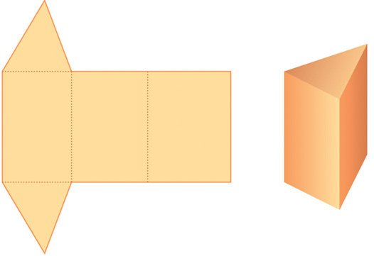<figcaption>Figure fig_ch10_p035_02 (Page 35)</figcaption></figure>
  <figure class="diagram-card" id="fig_ch10_p035_03">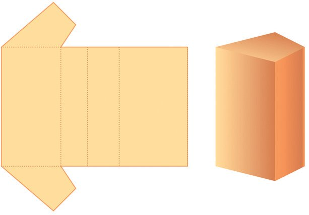<figcaption>Figure fig_ch10_p035_03 (Page 35)</figcaption></figure>
  <div class="page-content">
    <p>സ്തൂപിക-കൾ</p>
    <p>പല രീതിയിൽ കടലാസ് വെട്ടിയെടുത്ത്, മടക്കി ഒട്ടിച്ച്, സ്തംഭങ്ങൾ
ഉണ്ടാക്കാം:</p>
    <p>ഇത്തരം സ്തംഭങ്ങളെക്കുറിച്ച് പലതും പഠിക്കുകയും ചെയ്തു.
ഇനി വേറൊരു രൂപമുണ്ടാക്കി നോക്കാം.</p>
  </div>
</section><section class="page-section" id="page-36">
  <div class="page-header"><span class="page-number">Page 36</span></div>
  <figure class="diagram-card" id="fig_ch10_p036_01"><figcaption>Figure fig_ch10_p036_01 (Page 36)</figcaption></figure>
  <figure class="diagram-card" id="fig_ch10_p036_02">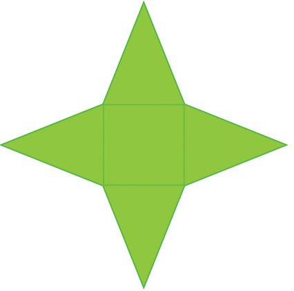<figcaption>Figure fig_ch10_p036_02 (Page 36)</figcaption></figure>
  <figure class="diagram-card" id="fig_ch10_p036_03">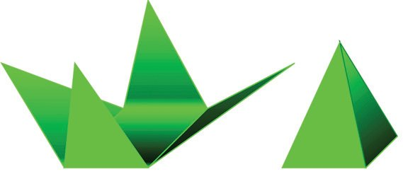<figcaption>Figure fig_ch10_p036_03 (Page 36)</figcaption></figure>
  <figure class="diagram-card" id="fig_ch10_p036_04">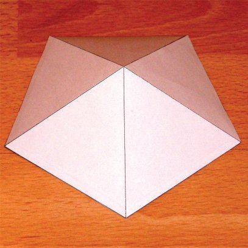<figcaption>Figure fig_ch10_p036_04 (Page 36)</figcaption></figure>
  <figure class="diagram-card" id="fig_ch10_p036_05">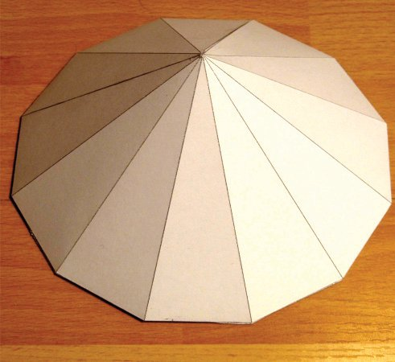<figcaption>Figure fig_ch10_p036_05 (Page 36)</figcaption></figure>
  <figure class="diagram-card" id="fig_ch10_p036_06"><figcaption>Figure fig_ch10_p036_06 (Page 36)</figcaption></figure>
  <div class="page-content">
    <p>ഗണിതം ത
സ്തൂപിക-കൾ ജിയോജിബ്രയിൽ</p>
    <p>ആദ്യം ചുവടെക്കാണിച്ചിരിക്കുന്നതുപോലെ ഒരു ചിത്രം
കടലാസിൽ വെട്ടിയെടുക്കുക:</p>
    <p>ജിയോ- ജ ഇബ്രയിൽ സ് ത ംഭ- ങ്ങ ൾ
നിർമിക്കുന്നതെങ്ങനെയെന്ന് 9-ാം
ക്ലാസിൽ കണ്ടതാണല്ലോ. ഇത്ത-</p>
    <p>ര- ത്ത ഇൽ സ് ത ഊപി- ക - ക ൾ നിർമിക്കുന്നതെങ്ങനെയെന്ന് നോക്കാം.
3ഉ ഏൃമുവശര എതുറന്ന് ആവശ്യമായ
പ്രാരംഭ ക്രമീ- ക - ര - ണ - ങ്ങ ൾ നടത്തുക. (9-ാം ക്ലാസിലെ സ്തംഭങ്ങൾ
എന്ന അധ-്യായ-ത്തിലെ ഘനരൂപങ്ങൾ ജിയോജിബ്രയിൽ എന്ന ഭാഗം
കാണുക) ഏൃമുവശര എൽ ഒരു സമചതുരം വരയ്ക്കുക. 3ഉ ഏൃമുവശര എൽ
ഋഃൃേൗറല ഈേ ജ്യൃമാശറ ഈൃ ഇീില ഉപയോഗിച്ച് ചതുര-ത്തിൽ ക്ലിക്ക് ചെയ്യുമ്പോൾ ലഭിക്കുന്ന ജാലക-ത്തിൽ
സ്തൂപിക-യുടെ ഉയരം നൽകുക.
(ഒരു സ്ലൈഡർ ഉണ്ടാക്കി ഉയര-മായി
സ്ലൈഡറിന്റെ പേര് നൽകുക-യുമാവാം)</p>
    <p>നടുക്കു സമച-തുരം. ചുറ്റും നാല് ത്രികോണ-ങ്ങൾ; ഇവ നാലും
ഒരേപോലെയുള്ള (തുല്യമായ) സമപാർശ്വത്രികോണ-ങ്ങളായിരിക്കണം. ഇനി ഇത് ചുവ-െടക്കാണിച്ചിരിക്കുന്നതുപോലെ മടക്കി
ഒട്ടിക്കുക:</p>
    <p>എന്തു രൂപമാണിത്? സ്തംഭമെന്ന് വിളിക്കാൻ വയ്യ;
സ്തംഭങ്ങൾക്ക് ഒരേ പോലെയുള്ള രണ്ട് പാദങ്ങളും,
വശങ്ങളിൽ ചതുര-ങ്ങളുമാണ്. ഇപ്പോഴുണ്ടാക്കിയ രൂപത്തിലാണെങ്കിൽ, ചുവടെ സമച-തുരം, മുകളിലൊരു മുന,
ചുറ്റും ത്രികോണങ്ങൾ.
സമച-തുര-ത്തിനു പകരം, മറ്റേതെങ്കിലും ചതുര-മാവാം;
അതുമ-ല്ലെങ്കിൽ ത്രികോണ-മോ, മറ്റേതെങ്കിലും ബഹുഭുജമോ ആവാം. പരീക്ഷിച്ചുനോക്കൂ. (പാദം സമബ-ഹുഭുജ-മാകുമ്പോഴാണ് ഭംഗി)
ഇത്തരം രൂപങ്ങൾക്കെല്ലാം പൊതുവായ പേരാണ് സ്തൂപികകൾ (്യൃമാശറ)െ.</p>
    <p>188</p>
  </div>
</section><section class="page-section" id="page-37">
  <div class="page-header"><span class="page-number">Page 37</span></div>
  <figure class="diagram-card" id="fig_ch10_p037_01"><figcaption>Figure fig_ch10_p037_01 (Page 37)</figcaption></figure>
  <figure class="diagram-card" id="fig_ch10_p037_02">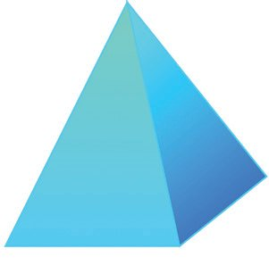<figcaption>Figure fig_ch10_p037_02 (Page 37)</figcaption></figure>
  <figure class="diagram-card" id="fig_ch10_p037_03">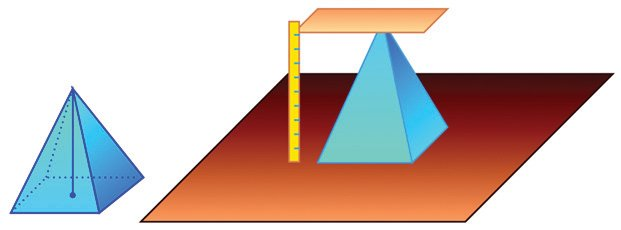<figcaption>Figure fig_ch10_p037_03 (Page 37)</figcaption></figure>
  <figure class="diagram-card" id="fig_ch10_p037_04">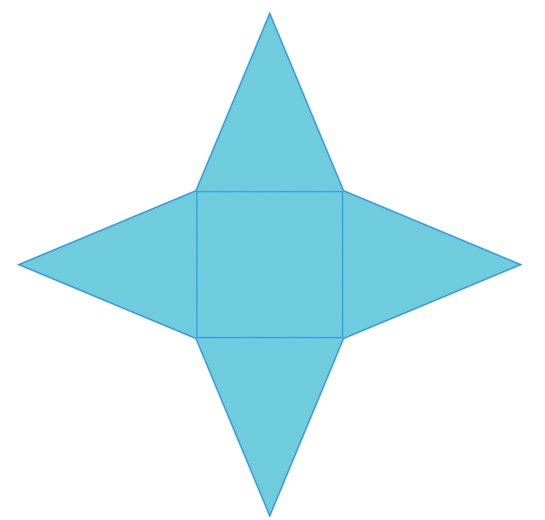<figcaption>Figure fig_ch10_p037_04 (Page 37)</figcaption></figure>
  <figure class="diagram-card" id="fig_ch10_p037_05"><figcaption>Figure fig_ch10_p037_05 (Page 37)</figcaption></figure>
  <div class="page-content">
    <p>ഘനരൂപങ്ങൾ</p>
    <p>ക്ക്
ശ്വവ
പാർ</p>
    <p>സ്തൂപിക-യുടെ പാദമായ ബഹുഭുജ-ത്തിന്റെ വശങ്ങളെ,
സ്തൂപിക-യുടെ പാദവ-ക്കുകൾ (യമലെ ലറഴല)െ എന്നും, ത്രികോണങ്ങളുടെ മറ്റു വശങ്ങളെ പാർശ്വവ-ക്കുകൾ (ഹമലേൃമഹ ലറഴല)െ
എന്ന്മാണ് പറയുന്നത്. സ്തൂപിക-യുടെ മുകള-റ്റത്തെ
അതിന്റെ ശീർഷം (മുലഃ) എന്നാണ് പറയുന്നത്.</p>
    <p>ശീർഷം</p>
    <p>പാദവക്ക്</p>
    <p>ഒരു സ്തംഭത്തിന്റെ ഉയര-മെന്നത്, അതിന്റെ പാദങ്ങൾ തമ്മിലുള്ള അകലമാണ-ല്ലോ. ഒരു സ്തൂപിക-യുടെ ഉയര-മെന്നാൽ, ശീർഷത്തിൽനിന്ന് പാദത്തിലേക്കുള്ള ലംബദൂര-മാണ്.</p>
    <p>പരപ്പളവ്
പാദവ-ക്കുകൾ 10 സെന്റിമീറ്ററും, പാർശ്വവ-ക്കുകൾ 13 സെന്റിമീറ്ററുമായ സമച-തുര-സ്തൂപിക-യുടെ ഉപരിത-ലപ-രപ്പളവ് എത്രയാണ്?
ഉപരിത-ലപ-രപ്പള-വെന്നാൽ, ഇതുണ്ടാക്കാൻ ആവശ്യമായ കടലാസിന്റെ പരപ്പള-വാണ-ല്ലോ. ഈ സ്തൂപിക മുറിച്ചു നിവർത്തി
വച്ചാൽ എങ്ങനെയിരിക്കും?</p>
    <p>10 സെ.മീ.</p>
    <p>13</p>
    <p>13</p>
    <p>സെ</p>
    <p>.മീ.</p>
    <p>സെ</p>
    <p>.മീ.</p>
    <p>189</p>
    <p>ജിയോ- ജ ഇബ്രയിൽ നിർമിച്ച ഒരു
സ്തൂപിക പൊളിച്ച് നിവർത്തുന്നതെങ്ങനെയെന്ന് നോക്കാം. നേരത്തെ
പറഞ്ഞതുപോലെ 3ഉ ഏൃമുവശര എൽ
ഒരു സ്തൂപിക നിർമിക്കുക. ചല ഏഉപയോഗിച്ച് ഈ സ്തൂപിക-യിൽ ക്ലിക്ക്
ചെയ്യുമ്പോൾ സ്തൂപിക പൊളിച്ച്
നിവർത്തിയ രൂപം ലഭി- ക്ക ഉം.
(ഇതിനെ സ് ത ഊപി- ക - യ ഉടെ ഇല
ഏഎന്നാണ് വിളി- ക്ക ഉ- ന്ന - ത ് ) ഇതോടൊപ്പം ഏൃമുവശര എൽ ഒരു സ്ലൈഡറും
ലഭിക്കും. ഈ സ്ലൈഡറുപ-യോഗിച്ച്
ഇല ഏൽ നിന്ന് സ് ത ഊപിക രൂപപ്പെടുന്നതെങ്ങനെയെന്ന് കാണാം.
അഹഴലയൃമ യിൽ ജ്യൃമാശറ എന്നതിലെ
സ്തൂപിക-യുടെ പേരിനു നേരെ ക്ലിക്ക്
ചെയ്ത് സ്തൂപിക മറച്ചു വയ്ക്കുകയുമാവാം.</p>
  </div>
</section><section class="page-section" id="page-38">
  <div class="page-header"><span class="page-number">Page 38</span></div>
  <figure class="diagram-card" id="fig_ch10_p038_01"><figcaption>Figure fig_ch10_p038_01 (Page 38)</figcaption></figure>
  <figure class="diagram-card" id="fig_ch10_p038_02">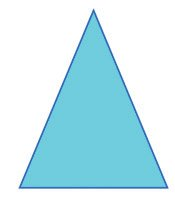<figcaption>Figure fig_ch10_p038_02 (Page 38)</figcaption></figure>
  <figure class="diagram-card" id="fig_ch10_p038_03">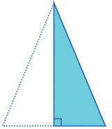<figcaption>Figure fig_ch10_p038_03 (Page 38)</figcaption></figure>
  <figure class="diagram-card" id="fig_ch10_p038_04">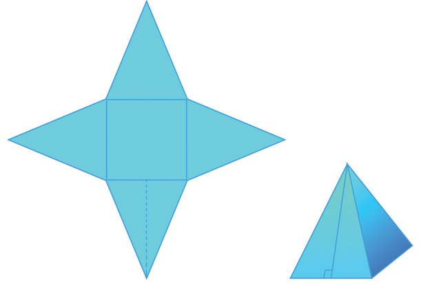<figcaption>Figure fig_ch10_p038_04 (Page 38)</figcaption></figure>
  <figure class="diagram-card" id="fig_ch10_p038_05"><figcaption>Figure fig_ch10_p038_05 (Page 38)</figcaption></figure>
  <div class="page-content">
    <p>ഗണിതം ത</p>
    <p>ഉയര-ത്തിന്റെയും</p>
    <p>ഗുണന-ഫല-ത്തിന്റെ</p>
    <p>13</p>
    <p>പാദത്തിന്റെയും</p>
    <p>.മീ.</p>
    <p>ത്രികോണ-ത്തിന്റെ പരപ്പളവ്</p>
    <p>സെ</p>
    <p>സെ</p>
    <p>13</p>
    <p>.മീ.</p>
    <p>ഇതിലെ സമച-തുര-ത്തിന്റെ പരപ്പളവ് 100 ചതുര-ശ്രസെന്റിമീറ്ററെന്ന് പെട്ടെന്ന്
പറയാം; ത്രികോണ-ത്തിന്റെ പരപ്പളവോ?</p>
    <p>പകുതി-</p>
    <p>യാണല്ലോ.</p>
    <p>10 സെ.മീ.</p>
    <p>.മീ.</p>
    <p>2</p>
    <p>സെ</p>
    <p>2</p>
    <p>13</p>
    <p>അതു കണക്കാക്കാൻ ത്രികോണ-ത്തിന്റെ ഉയരം
കൂടി വേണം. സമപാർശ്വത്രികോണ-മായ-തിനാൽ,
ഈ ലംബം താഴത്തെ വശത്തെ സമഭാഗം ചെയ്യും.
പൈഥ-ാഗറസ് സിദ്ധാന്തമുപ-യോഗിച്ച്, ലംബത്തിന്റെ നീളം
13 − 5 = 12 സെന്റിമീറ്റർ</p>
    <p>5 സെ.മീ.</p>
    <p>എന്ന് കണ്ടുപിടിക്കുകയും ചെയ്യാം. അപ്പോൾ ത്രികോണ-ത്തിന്റെ പരപ്പള-വ്,
5 ണ്മ 12 = 60 ചതുര-ശ്രസെന്റിമീറ്റർ.
പിടിച്ച</p>
    <p>ഉയരം</p>
    <p>12 സെ.മീ.</p>
    <p>ഉപ-യോഗിച്ച് സ്തൂപിക-യുടെ ഒരു പാദവക്കിന്റെ മധ്യ- ബ ഇ- ന്ദ ഉവും പാദ- ത്ത ഇന്റെ
വികർണത്തിന്റെ മധ്യബിന്ദുവും അടയാളപ്പെടുത്തുക. ടലഴാലി ഏഉപ-യോഗിച്ച് സ്തൂപിക- യ ഉടെ ഉയ- ര ം, ചരി- വ ഉ- യ രം ഇവ അടയാളപ്പെടുത്താം. ജീഹ്യഴീി ഉപയോഗിച്ച്, ഉയരം, ചരിവുയരം, പാർശ-്വവ-ക്ക്, പാദവ-ക്കിന്റെ
പകുതി, തുടങ്ങിയവ വശങ്ങളായി വരുന്ന
മട്ടത്രികോണ-ങ്ങൾ വരച്ച് നോക്കൂ. ചല ഏഉപയോഗിച്ച് സ്തൂപിക പൊളിച്ചു നിവർത്തി
നോക്കാം. സ്തൂപിക മറച്ചു വയ്ക്കുകയും
ചെയ്യാം.</p>
    <p>എന്താകും?</p>
    <p>190</p>
    <p>ഈ.</p>
    <p>ജിയോ- ജ ഇബ്രയിൽ ഒരു സമ- ച - ത ഉര
സ്തൂപിക നിർമിക്കുക. ങശറുീശി ഏീൃ ഇലിൃേല</p>
    <p>കടലാസ് സ്തൂപിക-യായിക്കഴിയുമ്പോൾ, ഇപ്പോൾ കണ്ടു-</p>
    <p>12 സെ.മ</p>
    <p>ഉയരവും ചരിവുയരവും</p>
  </div>
</section><section class="page-section" id="page-39">
  <div class="page-header"><span class="page-number">Page 39</span></div>
  <figure class="diagram-card" id="fig_ch10_p039_01"><figcaption>Figure fig_ch10_p039_01 (Page 39)</figcaption></figure>
  <figure class="diagram-card" id="fig_ch10_p039_02"><figcaption>Figure fig_ch10_p039_02 (Page 39)</figcaption></figure>
  <figure class="diagram-card" id="fig_ch10_p039_03"><figcaption>Figure fig_ch10_p039_03 (Page 39)</figcaption></figure>
  <figure class="diagram-card" id="fig_ch10_p039_04"><figcaption>Figure fig_ch10_p039_04 (Page 39)</figcaption></figure>
  <figure class="diagram-card" id="fig_ch10_p039_05">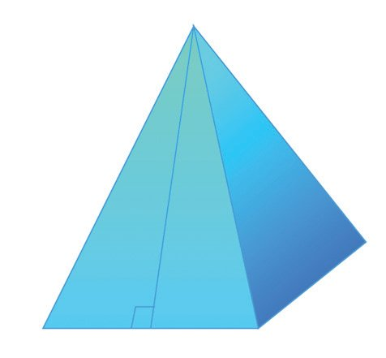<figcaption>Figure fig_ch10_p039_05 (Page 39)</figcaption></figure>
  <figure class="diagram-card" id="fig_ch10_p039_06">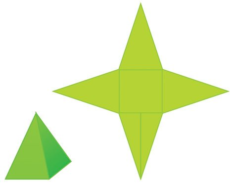<figcaption>Figure fig_ch10_p039_06 (Page 39)</figcaption></figure>
  <div class="page-content">
    <p>ഘനരൂപങ്ങൾ
ചരിവുയ-രം (ഹെമി ഏവലശഴവ)േ</p>
    <p>എന്നാണ് പറയുന്നത്.
ഇപ്പോൾ ചെയ്ത കണക്കിൽ സ്തൂപിക-യുടെ പാദവ-ക്കും,
പാർശ്വവക്കും, ചരിവുയ-രവും തമ്മിലുള്ള ഒരു ബന്ധം
കണ്ടല്ലോ; ചിത്രത്തിൽ കാണിച്ചിരിക്കുന്നതുപോലെയുള്ള
ഒരു മട്ടത്രികോണം, സമച-തുര-സ്തൂപിക-യുടെ ഓരോ വശത്തുമുണ്ട്. ലംബവ-ശങ്ങൾ, ചരിവുയ-രവും പാദത്തിന്റെ പകുതിയും, കർണം പാർശ്വവക്കും ആണ്.
ഇനി ഈ കണക്ക് ചെയ്തുകൂടേ?
പാദവ-ക്കുകൾ 2 മീറ്ററും, പാർശ്വവ-ക്കുകൾ 3 മീറ്ററുമായ സമചതുര-സ്തൂപിക-യുടെ ഉപരിത-ലപ-രപ്പള-വെത്രയാണ്?
പാദത്തിന്റെ പരപ്പള-വ്, 4 ചതുര-ശ്രമീറ്റർ. പാർശ്വവ-ശങ്ങളുടെ
പരപ്പളവു കാണാൻ ചരിവുയ-രം- വേണം. നേരത്തെ പറഞ്ഞ
മട്ടത്രികോണ-ത്തിൽ ഒരു വശം, പാദവക്കിന്റെ പകുതി
1 മീറ്ററും; കർണ-ം, പാർശ്വവക്ക് ആയ 3 മീറ്ററും; അതിനാൽ
ചരിവുയരം
3 − 1 = 2 2 മീറ്റർ
ഇതുപ-യോഗിച്ച് ഓരോ ത്രികോണ-വശ-ത്തിന്റെയും
പരപ്പള-വ്,
ണ്മ 2 ണ്മ 2 2 = 2 2 ചതുര-ശ്രമീറ്റർ
എന്ന് കാണാം. അപ്പോൾ സ് ത ഊപി- ക - യ ഉടെ ഉപ- ര ഇ- ത - ല - പ - ര - പ്പ - ള - വ ് ,
4 + (4 ണ്മ 2 2 ) = 4 + 8 2 ചതുര-ശ്രമീറ്റർ.
ഇതുകൊണ്ടു തൃപ്തിയായില്ലെങ്കിൽ, കാൽക്കുലേറ്റർ ഉപയോഗിച്ച് (അല്ലെങ്കിൽ 2 നോട് ഏകദേശം തുല്യമായ ഭിന്നസംഖ്യ ഓർത്തെടുത്ത്), ഇത്
ഏകദേശം 15.31 ചതുര-ശ്രമീറ്ററാണെന്ന് കണ്ടുപിടിക്കാം.
സ്തൂപിക-യുടെ</p>
    <p>പാർ
ശ്വവ
ക്ക്
ചരിവുയ
രം</p>
    <p>നീളത്തെ</p>
    <p>പാദവ-ക്കിന്റെ പകുതി</p>
    <p>1 മീ</p>
    <p>1 മീ</p>
    <p>1
2</p>
    <p>3മ ഈ</p>
    <p>2</p>
    <p>ഈ</p>
    <p>2</p>
    <p>3മ</p>
    <p>ഈ</p>
    <p>2 മീ</p>
    <p>വശങ്ങൾക്കെല്ലാം 5 സെന്റിമീറ്റർ നീളമുള്ള ഒരു സമച-തുരം; ഒരു
വശം 5 സെന്റിമീറ്ററും അതിൽനിന്നു എതിർമൂല-യിലേക്കുള്ള ഉയരം
8 സെന്റിമീറ്ററും ആയ നാല് സമപാർശ്വത്രികോണ-ങ്ങൾ; ഇവ ചേർത്തുവച്ച് ഒരു സമച-തുര-സ്തൂപിക ഉണ്ടാക്കണം. അതിന് എത്ര ചതുര-ശ്രസെന്റിമീറ്റർ കടലാസു വേണം?
(2) സമച-തുര-സ്തൂപികാകൃതിയിലുള്ള ഒരു കളിപ്പാട്ടത്തിന്റെ പാദവക്ക്
16 സെന്റിമീറ്ററും ചരിവുയരം 10 സെന്റിമീറ്ററുമാണ്. ഇത്തരം 500 കളിപ്പാട്ടങ്ങൾ ചായം പൂശുന്നതിന് ചതുര-ശ്രമീറ്ററിന് 80 രൂപ നിരക്കിൽ
എത്ര രൂപ ചെലവാകും?
(1)</p>
    <p>191</p>
  </div>
</section><section class="page-section" id="page-40">
  <div class="page-header"><span class="page-number">Page 40</span></div>
  <figure class="diagram-card" id="fig_ch10_p040_01"><figcaption>Figure fig_ch10_p040_01 (Page 40)</figcaption></figure>
  <figure class="diagram-card" id="fig_ch10_p040_02"><figcaption>Figure fig_ch10_p040_02 (Page 40)</figcaption></figure>
  <figure class="diagram-card" id="fig_ch10_p040_03">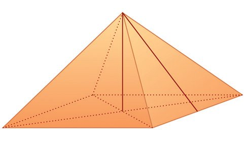<figcaption>Figure fig_ch10_p040_03 (Page 40)</figcaption></figure>
  <figure class="diagram-card" id="fig_ch10_p040_04"><figcaption>Figure fig_ch10_p040_04 (Page 40)</figcaption></figure>
  <figure class="diagram-card" id="fig_ch10_p040_05">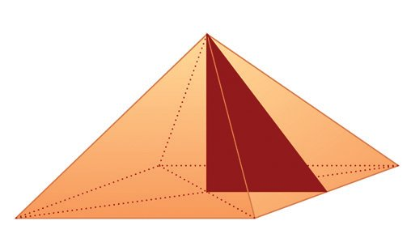<figcaption>Figure fig_ch10_p040_05 (Page 40)</figcaption></figure>
  <div class="page-content">
    <p>ഗണിതം ത
(3)</p>
    <p>(4)</p>
    <p>4 മീറ്റർ</p>
    <p>(5)</p>
    <p>ഒരു സമച-തുര-സ്തൂപിക-യുടെ പാർശ്വമുഖ-ങ്ങൾ സമഭുജ-ത്രികോണങ്ങളാണ്. പാദവ-ക്കിന്റെ നീളം 30 സെന്റിമീറ്റർ. അതിന്റെ ഉപരിത-ലപരപ്പളവ് എത്രയാണ്?
ഒരു സമചതുര-സ്തൂപിക-യുടെ പാദചുറ്റളവ് 40 സെന്റിമീറ്ററും, വക്കുകളുടെ ആകെ നീളം 92 സെന്റിമീറ്ററുമാണ്. സ്തൂപിക-യുടെ ഉപരിതല -പരപ്പളവ് കണക്കാക്കുക.
പാർശ്വതലപരപ്പള-വ്, പാദപ്പരപ്പളവിന് തുല്യമായ സമച-തുര-സ്തൂപിക
ഉണ്ടാക്കാൻ കഴിയുമോ?
ഉയരവും ചരിവുയ-രവും
സ്തൂപിക-കളുടെ അളവുക-ളിൽ പലപ്പോഴും ഉയരം പ്രധാന-മാണ്. ഈ കണക്കുനോക്കൂ.
സമച-തുര-സ്തൂപിക-യുടെ ആകൃതിയി-ൽ ഒരു കൂടാരം ഉണ്ടാക്കണം.
പാദത്തിന്റെ വശങ്ങൾ 6 മീറ്റർ വേണം; കൂടാര-ത്തിന്റെ ഉയരം 4 മീറ്ററും. ഇതിന് എത്ര ചതുര-ശ്രമീറ്റർ ക്യാൻവാസ് വേണം?
കൂടാര-ത്തിന്റെ വശങ്ങളായ ത്രികോണ-ത്തിന്റെ പരപ്പളവ് കണക്കാക്കാൻ, ചരിവുയരം വേണ്ടേ? തന്നിട്ടുള്ള വിവര-ങ്ങൾ വച്ച്, അതെങ്ങനെ കണ്ടുപിടിക്കും?
അ
ഈ ചിത്രം നോക്കൂ:</p>
    <p>ഇ</p>
    <p>ങ</p>
    <p>6 മീറ്റർ</p>
    <p>നമുക്കുവേണ്ട ചരിവുയരം അങ ആണ്. ഇങ യോജിപ്പിച്ചാൽ,
അങ കർണമായ ഒരു മട്ടത്രികോണം കിട്ടില്ലേ? അതിൽ ഇങ
പിരമിഡ് എന്ന് പറയുമ്പോൾത്തന്നെ ന്റെ നീളം എത്രയാണ്? അ</p>
    <p>ഈജിപ്റ്റിലെ പിരമിഡുകൾ</p>
    <p>4 മീറ്റർ</p>
    <p>മനസിലെത്തുന്ന ചിത്രം, ഈജിപ്റ്റിലെ
പിരമിഡുക-ളാണ്. ഈജിപ്റ്റിലെ പലഭാഗ- ങ്ങ - ള ഇ- ല ആയി 138 പിര- മ ഇ- ഡ ഉ- ക - ള ആണ്
കണ്ടെത്തിയിട്ടുള്ളത്. ബി.സി. രണ്ടായിരത്തോട-ടുപ്പിച്ചാണ് ഇവയിൽ പലതും
നിർമിച്ചത്.</p>
    <p>ഇ
6 മീറ്റർ</p>
    <p>ചിത്രത്തിൽനിന്ന് അങ =
ക്കാം.
192</p>
    <p>3 മീറ്റർ</p>
    <p>ങ</p>
    <p>32 + 4 2 = 5 മീറ്റർ എന്ന് കണക്കാ-</p>
  </div>
</section><section class="page-section" id="page-41">
  <div class="page-header"><span class="page-number">Page 41</span></div>
  <figure class="diagram-card" id="fig_ch10_p041_01"><figcaption>Figure fig_ch10_p041_01 (Page 41)</figcaption></figure>
  <figure class="diagram-card" id="fig_ch10_p041_02"><figcaption>Figure fig_ch10_p041_02 (Page 41)</figcaption></figure>
  <figure class="diagram-card" id="fig_ch10_p041_03"><figcaption>Figure fig_ch10_p041_03 (Page 41)</figcaption></figure>
  <figure class="diagram-card" id="fig_ch10_p041_04"><figcaption>Figure fig_ch10_p041_04 (Page 41)</figcaption></figure>
  <figure class="diagram-card" id="fig_ch10_p041_05">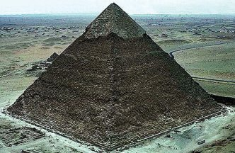<figcaption>Figure fig_ch10_p041_05 (Page 41)</figcaption></figure>
  <figure class="diagram-card" id="fig_ch10_p041_06">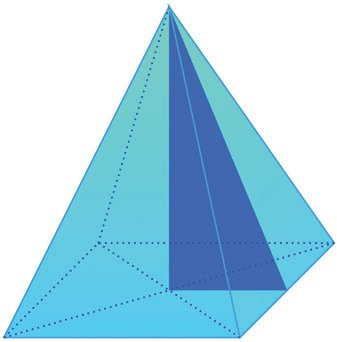<figcaption>Figure fig_ch10_p041_06 (Page 41)</figcaption></figure>
  <figure class="diagram-card" id="fig_ch10_p041_07"><figcaption>Figure fig_ch10_p041_07 (Page 41)</figcaption></figure>
  <figure class="diagram-card" id="fig_ch10_p041_08">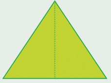<figcaption>Figure fig_ch10_p041_08 (Page 41)</figcaption></figure>
  <figure class="diagram-card" id="fig_ch10_p041_09">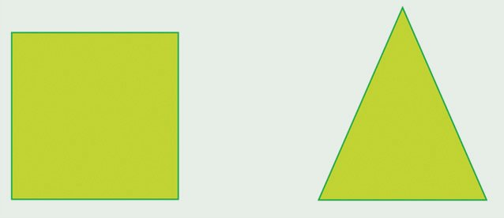<figcaption>Figure fig_ch10_p041_09 (Page 41)</figcaption></figure>
  <div class="page-content">
    <p>ഘനരൂപങ്ങൾ</p>
    <p>അപ്പോൾ കൂടാര-മുണ്ടാക്കാൻ, ഒരു വശത്തിന്റെ നീളം 6 മീറ്ററും, അതിൽനിന്നുള്ള ഉയരം 5 മീറ്ററുമായ നാല് സമപാർശ്വത്രികോണ-ങ്ങളാണ് വേണ്ടത്.
ഇവയുടെ മൊത്തം പരപ്പള-വ്, 4 ണ്മ ണ്മ 6 ണ്മ 5 = 60 ചതുര-ശ്രമീറ്ററാണ-ല്ലോ.
കൂടാര-മുണ്ടാക്കാൻ ഇത്രയും ക്യാൻവാസ് വേണം.
ഈ കണക്കിൽ കണ്ട- കാര്യം എല്ലാ സമച-തുര-സ്തൂപിമഹാസ്തൂപിക
കയിലും ശരിയാണ-ല്ലോ. ഏതു സമച-തുര-സ്തൂപിക- ഈജിപ്റ്റിലെ, ഗിസയിലെ
യ്ക്കുള്ളിലും, ചരിവുയരം കർണമായ ഒരു മട്ടത്രി- മഹാ- സ ് ത ഊ- പ ഇകയാണ്
കോണം സങ്കൽപ്പിക്കാം; അതിന്റെ ലംബവ-ശങ്ങൾ, ഏറ്റവും വലിയ പിരമിഡ്.
സ്തൂപിക-യുടെ ഉയര-വും പാദവ-ക്കിന്റെ പകുതിയും.
1
2</p>
    <p>ഇതിന്റെ പാദമായ സമചതുര-ത്തിന് അര ലക്ഷത്തോളം ചതുര-ശ്രമീറ്റർ
പരപ്പുണ്ട്; ഉയരം ഏതാണ്ട് 140 മീറ്ററും. ഇതു
നിർമിക്കാൻ ഇരുപതു കൊല്ലത്തോളം വേണ്ടിവന്നിട്ടുണ്ടാകും എന്നാണ് കണക്കുകൂട്ടിയിരിക്കുന്നത്.
കൃത്യമായ സമച-തുര-ത്തിൽ നിന്നു തുടങ്ങി,
ഭീമാകാര-മായ കല്ലുകൾ മേൽപ്പോട്ട് പടുത്തുയർത്തി, ഒരു ബിന്ദുവിൽ അവസാനിക്കുന്ന
ഈ രാജകീയ ശവക്കല്ലറ-കൾ, മനുഷ്യാധ്വാന- ത്ത ഇ- ഏന്റ- യ ഉം, നിർമാണ വൈദ- ഗ ് ധ ്യ- ത്ത ഇന്റേയും, ഗണിത-വിജ്ഞാന-ത്തിന്റേയും ജീവിക്കുന്ന പ്രതീക-ങ്ങളായി ഉയർന്നു നിൽക്കുന്നു.</p>
    <p>ചരിവ
ഉയരം</p>
    <p>ഉയരം</p>
    <p>(ഏൃലമ ഏജ്യൃമാശറ ഈള ഏശ്വമ)</p>
    <p>പാദവ-ക്കിന്റെ പകുതി</p>
    <p>18 സെ.മീ.</p>
    <p>ചിത്ര- ത്ത ഇൽ കാണി- ച്ച ഇ- ര ഇക്കുന്ന അളവുക-ളിൽ ഒരു സമചതുര-വും, നാല് ത്രികോണങ്ങളും ഉപയോഗിച്ചു സമചതുര-സ്തൂപിക ഉണ്ടാക്കി.</p>
    <p>സ്തൂപിക-യുടെ ഉയരം എത്രയാണ്?
സമച-തുരവും ത്രികോണ-ങ്ങളും ഇങ്ങനെ ആയാലോ?
സെ</p>
    <p>.മീ.</p>
    <p>24 സെ.മീ.</p>
    <p>30</p>
    <p>(1)</p>
    <p>24 സെ.മീ.</p>
    <p>193</p>
  </div>
</section><section class="page-section" id="page-42">
  <div class="page-header"><span class="page-number">Page 42</span></div>
  <figure class="diagram-card" id="fig_ch10_p042_01"><figcaption>Figure fig_ch10_p042_01 (Page 42)</figcaption></figure>
  <figure class="diagram-card" id="fig_ch10_p042_02"><figcaption>Figure fig_ch10_p042_02 (Page 42)</figcaption></figure>
  <figure class="diagram-card" id="fig_ch10_p042_03"><figcaption>Figure fig_ch10_p042_03 (Page 42)</figcaption></figure>
  <figure class="diagram-card" id="fig_ch10_p042_04"><figcaption>Figure fig_ch10_p042_04 (Page 42)</figcaption></figure>
  <figure class="diagram-card" id="fig_ch10_p042_05"><figcaption>Figure fig_ch10_p042_05 (Page 42)</figcaption></figure>
  <div class="page-content">
    <p>ഗണിതം ത</p>
    <p>കടലാസ് മുറിച്ച് ഒരു സമച-തുര-സ്തൂപിക ഉണ്ടാക്കണം. പാദവക്ക് 10
സെന്റിമീറ്ററും, ഉയരം 12 സെന്റിമീറ്ററും വേണം. ത്രികോണ-ങ്ങളുടെ
അളവുകൾ എത്ര ആയിരിക്കണം?
(3) ഏതു സമച-തുര-സ്തൂപിക-യിലും ഉയരം, ചരിവുയ-രം, പാർശ്വവക്ക്
എന്നിവ-യുടെ വർഗങ്ങൾ സമാന്തരശ്രേണിയിലാണെന്ന് തെളിയിക്കുക.
(4) ചിത്രത്തിൽ കൊടുത്ത സമപാർശ്വത്രികോണം
പാർശ്വമുഖ-ങ്ങളായി ഒരു സമച-തുര-സ്തൂപിക
ഉണ്ടാക്കണം. അതിന്റെ ഉയരം എന്തായിരിക്കും?
പാദവക്ക് 30 സെന്റിമീറ്ററിനു പകരം 40 സെന്റിമീറ്ററായാലോ?
(2)</p>
    <p>.മീ
.</p>
    <p>25</p>
    <p>സെ</p>
    <p>സെ</p>
    <p>.മീ</p>
    <p>.</p>
    <p>25</p>
    <p>30 സെ.മീ.</p>
    <p>തുല്യമായ ഏത് നാല് സമപാർശ്വത്രികോണ-ങ്ങൾ ഉപയോഗിച്ചും
സമച-തുര-സ്തൂപിക ഉണ്ടാക്കാൻ കഴിയുമോ?</p>
    <p>സ്തൂപിക-യുടെ വ്യാപ്തം</p>
    <p>ഏതു സ്തംഭത്തിന്റെയും വ്യാപ്തം
പാദപ-രപ്പള-വിന്റെയും, ഉയര-ത്തിന്റെയും ഗുണന-ഫല-മാണെന്ന് കണ്ടല്ലോ. ഒരു സ് ത ഊപി- ക - യ ഉടെ
വ്യാപ്തമോ?
സമച-തുരസ്തൂപിക തന്നെ എടുക്കാം. ആദ്യം ഒരു പരീക്ഷണ-മാവാം. നല്ല കട്ടിയുള്ള കടലാസുകൊണ്ട്, ഒരു തുറന്ന സമച-തുര-സ്തൂപിക ഉണ്ടാക്കുക. ഇനി, അതേ പാദവും
ഉയര-വുമുള്ള ഒരു തുറന്ന സമച-തുര-സ്തംഭവും ഉണ്ടാക്കുക.
സ്തൂപിക-യിൽ മണൽ നിറച്ച്, സ്തംഭത്തിലേക്കു പകരുക;
സ്തൂപികാവ്യാപ്തം
ഒരേ പാദവും ഒരേ ഉയര-വുമുള്ള ഒരു മണൽനിര-പ്പിന്റെ ഉയരം സ്തംഭത്തിന്റെ ഉയര-ത്തിന്റെ എത്ര
സമച-തുരസ്തൂപികയും സമച-തുര ഭാഗമാണെന്ന് അളന്നു നോക്കുക. മൂന്നിലൊന്നല്ലേ? സ്തംഭം
സ് ത ംഭവും
ജിയോ- ജ ഇ- ്രബ- യ ഇൽ നിറയാൻ- എത്ര തവണ ഇതുപോലെ സ്തൂപിക-യിൽ മണനിർമിക്കുക. ഇവ പെട്ടെന്ന് തിരിച്ചറി- ലെടുക്കണം?
യാൻ ഉള്ളിലുള്ള സ്തൂപിക-യുടെ നിറം
മാറ്റി- എകാ- ട ഉ- ക്ക ഉ- ക യും ഛുമരശ്യേ 100 അപ്പോൾ സ്തംഭത്തിന്റെ വ്യാപ്തം സ്തൂപിക-യുടെ വ്യാപ്ആക്കുകയും ചെയ്താൽ മതി (ഛയഷലര ഏതത്തിന്റെ മൂന്ന് മടങ്ങാണെന്ന് കാണാം. (ഇതിന്റെ ഗണിതുൃീുലൃശേല എ→ ഇീഹീൗൃ) ഢീഹൗാല ഉപയോ- പര-മായ വിശദീകര-ണം, പാഠത്തിന്റെ അവസാന-ഭാഗത്ത്
ഗിച്ച് സ് ത ഊപി- ക - യ ഉ- ഏടയും സ് ത ംഭ- കൊടുത്തിട്ടുണ്ട്).
ത്തിന്റെയും വ്യാപ്തം കണക്കാക്കുക.
ഇവ തമ്മിൽ എന്താണ് ബന്ധം? ഇവ- സ് ത ംഭ- ത്ത ഇന്റെ വ്യാപ് ത ം, പാദ- പ - ര - പ്പ - ള - വ ഇന്റെയും ഉയയുടെ പാദവും ഉയരവും മാറ്റിയാലോ? രത്തിന്റെയും ഗുണന-ഫലമാണെന്ന് ഒമ്പതാംക്ലാസിൽ കണ്ടിട്ടുണ്ട്.
194</p>
  </div>
</section><section class="page-section" id="page-43">
  <div class="page-header"><span class="page-number">Page 43</span></div>
  <figure class="diagram-card" id="fig_ch10_p043_01"><figcaption>Figure fig_ch10_p043_01 (Page 43)</figcaption></figure>
  <figure class="diagram-card" id="fig_ch10_p043_02"><figcaption>Figure fig_ch10_p043_02 (Page 43)</figcaption></figure>
  <figure class="diagram-card" id="fig_ch10_p043_03"><figcaption>Figure fig_ch10_p043_03 (Page 43)</figcaption></figure>
  <figure class="diagram-card" id="fig_ch10_p043_04"><figcaption>Figure fig_ch10_p043_04 (Page 43)</figcaption></figure>
  <div class="page-content">
    <p>ഘനരൂപങ്ങൾ</p>
    <p>അപ്പോൾ സമച-തുര-സ്തൂപിക-യുടെ വ്യാപ്തത്തെക്കുറിച്ച് എന്തു പറയാം?
സമച-തുര-സ്തൂപിക-യുടെ വ്യാപ്തം, പാദപ-രപ്പള-വിന്റെയും, ഉയര-ത്തിന്റെയും ഗുണന-ഫല-ത്തിന്റെ മൂന്നിലൊന്നാണ്.</p>
    <p>ഉദാഹ-രണ-മായി, പാദവ-ക്കുകൾ 10 സെന്റിമീറ്ററും, ഉയരം 8 സെന്റിമീറ്ററു2</p>
    <p>1</p>
    <p>മായ സമച-തുര-സ്തൂപിക-യുടെ വ്യാപ്തം 3 ണ്മ 102 ണ്മ 8 = 266 3 ഘനസെന്റി-</p>
    <p>മീറ്ററാണ്.</p>
    <p>ലോഹം കൊണ്ടുണ്ടാക്കിയ ഒരു സമച-തുര-ക്കട്ടയുടെ ഒരു വക്കിന്റെ നീളം
15 സെന്റി- മ ഈ- റ്റ - റ ആണ് . ഇത് ഉരുക്കി 25 സെന്റി- മ ഈ- റ്റ ർ പാദ- വ - ക്ക ഉള്ള ഒരു
സമച-തുര-സ്തൂപിക ഉണ്ടാക്കി-. അതിന്റെ ഉയരം എന്താണ്?
സമച-തുര-ക്കട്ടയുടെ വ്യാപ്തം 153 ഘനസെന്റിമീറ്റ-ർ.
ഉരുക്കി ഉണ്ടാക്കുന്ന സമച-തുര-സ്തൂപിക-യുടെ വ്യാപ്തവും ഇതുതന്നെ.
പാദപ-രപ്പള-വിനെ ഉയരത്തിന്റെ മൂന്നിലൊന്നുകൊണ്ടു ഗുണിച്ചതാണല്ലോ
സ്തൂപിക-യുടെ വ്യാപ്തം.
കണക്കിലെ സ്തൂപിക-യുടെ പാദപ-രപ്പളവ് 252 ചതുരശ്രമീറ്റർ ആയതിനാൽ,
3
ഉയര-ത്തിന്റെ മൂന്നിലൊന്ന് 152 എന്നും, അതിൽനിന്ന് ഉയരം
25</p>
    <p>എന്നും കാണാം.
(1)
(2)</p>
    <p>(3)</p>
    <p>(4)
(5)</p>
    <p>3ണ്മ</p>
    <p>153
= 16.2 സെന്റിമീറ്റർ
252</p>
    <p>പാദവക്ക് 10 സെന്റിമീറ്ററും, ചരിവുയരം 15 സെന്റിമീറ്ററുമായ സമചതുര-സ്തൂപിക-യുടെ വ്യാപ്തം എത്രയാണ്?
രണ്ട് സമച-തുര-സ്തൂപികകളുടെ വ്യാപ്തം തുല്യമാണ്. ഒന്നാമത്തെ
സ്തൂപിക-യുടെ പാദവ-ക്കിന്റെ പകുതിയാണ് രണ്ടാമത്തെ സ്തൂപികയുടെ പാദവ-ക്കിന്റെ നീളം. ഒന്നാമത്തെ സ്തൂപിക-യുടെ ഉയര-ത്തിന്റെ
എത്ര മടങ്ങാണ് രണ്ടാമത്തെ സ്തൂപിക-യുടെ ഉയരം?
രണ്ട് സമച-തുര-സ്തൂപിക-കളുടെ പാദവ-ക്കുകൾ 1 : 2 എന്ന അംശബന്ധത്തിലാണ്. അവയുടെ ഉയര-ങ്ങൾ 1 : 3 എന്ന അംശബ-ന്ധത്തിലും.
ഒന്നാമത്തെ സ്തൂപിക-യുടെ വ്യാപ്തം 180 ഘനസെന്റിമീറ്ററാണ്. രണ്ടാമത്തെ സ്തൂപിക-യുടെ വ്യാപ്തം എത്രയാണ്?
വക്കുക-ളെല്ലാം തുല്യമായ ഒരു സമച-തുര-സ്തൂപിക-യുടെ പാദവ-ക്കിന്റെ
നീളം 18 സെന്റിമീറ്ററാണ്. സ്തൂപിക-യുടെ വ്യാപ്തം കണക്കാക്കുക.
ഒരു സമച-തുര-സ്തൂപിക-യുടെ ചരിവുയരം 25 സെന്റിമീറ്ററും, ഉപരിതല- പരപ്പളവ് 896 ചതുരശ്രസെന്റിമീറ്ററുമാണ്. സ്തൂപിക-യുടെ
വ്യാപ്തം കണക്കാക്കുക.
195</p>
  </div>
</section><section class="page-section" id="page-44">
  <div class="page-header"><span class="page-number">Page 44</span></div>
  <figure class="diagram-card" id="fig_ch10_p044_01"><figcaption>Figure fig_ch10_p044_01 (Page 44)</figcaption></figure>
  <figure class="diagram-card" id="fig_ch10_p044_02"><figcaption>Figure fig_ch10_p044_02 (Page 44)</figcaption></figure>
  <figure class="diagram-card" id="fig_ch10_p044_03">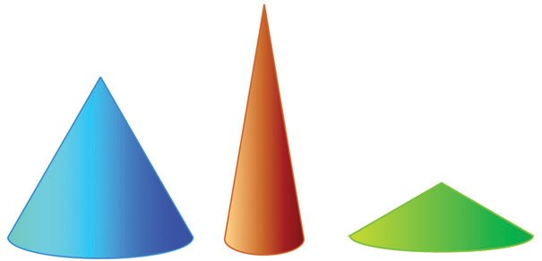<figcaption>Figure fig_ch10_p044_03 (Page 44)</figcaption></figure>
  <figure class="diagram-card" id="fig_ch10_p044_04">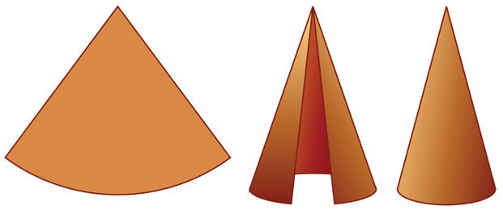<figcaption>Figure fig_ch10_p044_04 (Page 44)</figcaption></figure>
  <figure class="diagram-card" id="fig_ch10_p044_05"><figcaption>Figure fig_ch10_p044_05 (Page 44)</figcaption></figure>
  <div class="page-content">
    <p>ഗണിതം ത
(6)</p>
    <p>വക്കുക-ളെല്ലാം തുല്യനീള-മായ ഒരു സമച-തുര-സ്തൂപിക-യുടെ ഉയരം
12 സെന്റിമീറ്ററാണ്. അതിന്റെ വ്യാപ്തം എന്താണ്?</p>
    <p>(7)</p>
    <p>പാദചുറ്റളവ് 64 സെന്റിമീറ്ററും വ്യാപ്തം 1280 ഘനസെന്റിമീറ്ററുമായ
സമച-തുര-സ്തൂപിക-യുടെ ഉപരിതലപരപ്പളവ് എന്താണ്?</p>
    <p>വൃത്തസ്തൂപിക</p>
    <p>വൃത്തസ്തംഭ-ങ്ങൾ പോലെ, പാദം വൃത്തമായ സ്തൂപിക-കളുമുണ്ട്:</p>
    <p>ഇവയെ വൃത്തസ്തൂപിക-കൾ (രീില)െ എന്നാണ് വിളിക്കുന്നത്.
ചതുരം വളച്ച് വൃത്തസ്തംഭ-മുണ്ടാക്കിയ-തുപോലെ, ഒരു വൃത്താംശം വളച്ച്
വൃത്തസ്തൂപിക-യുമുണ്ടാക്കാം. (അടഞ്ഞ സ്തൂപിക ഉണ്ടാക്കണ-മെങ്കിൽ,
ഒരു കൊച്ചു വൃത്തം വേറെയും വേണം.)</p>
    <p>വൃത്തസ്തൂപിക</p>
    <p>സമച-ത-ുരസ്തൂപിക പോലെ
വൃത്തസ്തൂപികയും ജിയോജിബ്രയിൽ നിർമിക്കാം. ഏൃമുവശര എൽ ഒരു വൃത്തം വരച്ച്
3ഉ ഏൃമുവശര എൽ ഋഃൃേൗറല ഈേ ജ്യൃമാശറ ഈൃ ഇീില ഉപ- ഏയാ- ഗ ഇച്ച്
വൃത്തസ്തൂപിക നിർമിക്കാം.
ആവശ-്യമെങ്കിൽ ആരവും ഉയരവും മാറ്റാൻ സ്ലൈഡറുകൾ
ഉപയോഗിക്കാം.</p>
    <p>ഇതിൽ വളയ്ക്കുന്ന വൃത്ത-ാംശ-ത്തിന്റെ അളവുക-ളും, ഉണ്ടാക്കിയ
വൃത്തസ്തൂപിക-യുടെ അളവുകളും തമ്മിലെന്താണ് ബന്ധം?
196</p>
  </div>
</section><section class="page-section" id="page-45">
  <div class="page-header"><span class="page-number">Page 45</span></div>
  <figure class="diagram-card" id="fig_ch10_p045_01"><figcaption>Figure fig_ch10_p045_01 (Page 45)</figcaption></figure>
  <figure class="diagram-card" id="fig_ch10_p045_02"><figcaption>Figure fig_ch10_p045_02 (Page 45)</figcaption></figure>
  <figure class="diagram-card" id="fig_ch10_p045_03"><figcaption>Figure fig_ch10_p045_03 (Page 45)</figcaption></figure>
  <figure class="diagram-card" id="fig_ch10_p045_04"><figcaption>Figure fig_ch10_p045_04 (Page 45)</figcaption></figure>
  <figure class="diagram-card" id="fig_ch10_p045_05"><figcaption>Figure fig_ch10_p045_05 (Page 45)</figcaption></figure>
  <figure class="diagram-card" id="fig_ch10_p045_06"><figcaption>Figure fig_ch10_p045_06 (Page 45)</figcaption></figure>
  <figure class="diagram-card" id="fig_ch10_p045_07"><figcaption>Figure fig_ch10_p045_07 (Page 45)</figcaption></figure>
  <figure class="diagram-card" id="fig_ch10_p045_08">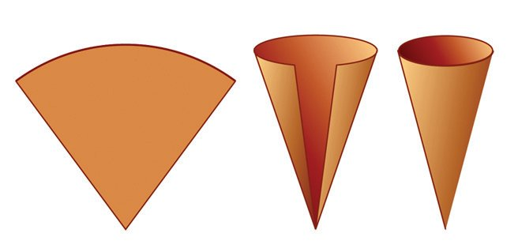<figcaption>Figure fig_ch10_p045_08 (Page 45)</figcaption></figure>
  <figure class="diagram-card" id="fig_ch10_p045_09"><figcaption>Figure fig_ch10_p045_09 (Page 45)</figcaption></figure>
  <figure class="diagram-card" id="fig_ch10_p045_10"><figcaption>Figure fig_ch10_p045_10 (Page 45)</figcaption></figure>
  <figure class="diagram-card" id="fig_ch10_p045_11"><figcaption>Figure fig_ch10_p045_11 (Page 45)</figcaption></figure>
  <figure class="diagram-card" id="fig_ch10_p045_12"><figcaption>Figure fig_ch10_p045_12 (Page 45)</figcaption></figure>
  <figure class="diagram-card" id="fig_ch10_p045_13"><figcaption>Figure fig_ch10_p045_13 (Page 45)</figcaption></figure>
  <figure class="diagram-card" id="fig_ch10_p045_14"><figcaption>Figure fig_ch10_p045_14 (Page 45)</figcaption></figure>
  <figure class="diagram-card" id="fig_ch10_p045_15"><figcaption>Figure fig_ch10_p045_15 (Page 45)</figcaption></figure>
  <figure class="diagram-card" id="fig_ch10_p045_16"><figcaption>Figure fig_ch10_p045_16 (Page 45)</figcaption></figure>
  <figure class="diagram-card" id="fig_ch10_p045_17"><figcaption>Figure fig_ch10_p045_17 (Page 45)</figcaption></figure>
  <figure class="diagram-card" id="fig_ch10_p045_18"><figcaption>Figure fig_ch10_p045_18 (Page 45)</figcaption></figure>
  <figure class="diagram-card" id="fig_ch10_p045_19"><figcaption>Figure fig_ch10_p045_19 (Page 45)</figcaption></figure>
  <figure class="diagram-card" id="fig_ch10_p045_20"><figcaption>Figure fig_ch10_p045_20 (Page 45)</figcaption></figure>
  <figure class="diagram-card" id="fig_ch10_p045_21"><figcaption>Figure fig_ch10_p045_21 (Page 45)</figcaption></figure>
  <figure class="diagram-card" id="fig_ch10_p045_22"><figcaption>Figure fig_ch10_p045_22 (Page 45)</figcaption></figure>
  <figure class="diagram-card" id="fig_ch10_p045_23"><figcaption>Figure fig_ch10_p045_23 (Page 45)</figcaption></figure>
  <figure class="diagram-card" id="fig_ch10_p045_24"><figcaption>Figure fig_ch10_p045_24 (Page 45)</figcaption></figure>
  <figure class="diagram-card" id="fig_ch10_p045_25"><figcaption>Figure fig_ch10_p045_25 (Page 45)</figcaption></figure>
  <figure class="diagram-card" id="fig_ch10_p045_26"><figcaption>Figure fig_ch10_p045_26 (Page 45)</figcaption></figure>
  <figure class="diagram-card" id="fig_ch10_p045_27"><figcaption>Figure fig_ch10_p045_27 (Page 45)</figcaption></figure>
  <figure class="diagram-card" id="fig_ch10_p045_28"><figcaption>Figure fig_ch10_p045_28 (Page 45)</figcaption></figure>
  <figure class="diagram-card" id="fig_ch10_p045_29"><figcaption>Figure fig_ch10_p045_29 (Page 45)</figcaption></figure>
  <figure class="diagram-card" id="fig_ch10_p045_30"><figcaption>Figure fig_ch10_p045_30 (Page 45)</figcaption></figure>
  <figure class="diagram-card" id="fig_ch10_p045_31"><figcaption>Figure fig_ch10_p045_31 (Page 45)</figcaption></figure>
  <figure class="diagram-card" id="fig_ch10_p045_32"><figcaption>Figure fig_ch10_p045_32 (Page 45)</figcaption></figure>
  <figure class="diagram-card" id="fig_ch10_p045_33"><figcaption>Figure fig_ch10_p045_33 (Page 45)</figcaption></figure>
  <figure class="diagram-card" id="fig_ch10_p045_34"><figcaption>Figure fig_ch10_p045_34 (Page 45)</figcaption></figure>
  <figure class="diagram-card" id="fig_ch10_p045_35"><figcaption>Figure fig_ch10_p045_35 (Page 45)</figcaption></figure>
  <figure class="diagram-card" id="fig_ch10_p045_36"><figcaption>Figure fig_ch10_p045_36 (Page 45)</figcaption></figure>
  <figure class="diagram-card" id="fig_ch10_p045_37"><figcaption>Figure fig_ch10_p045_37 (Page 45)</figcaption></figure>
  <figure class="diagram-card" id="fig_ch10_p045_38"><figcaption>Figure fig_ch10_p045_38 (Page 45)</figcaption></figure>
  <figure class="diagram-card" id="fig_ch10_p045_39"><figcaption>Figure fig_ch10_p045_39 (Page 45)</figcaption></figure>
  <figure class="diagram-card" id="fig_ch10_p045_40"><figcaption>Figure fig_ch10_p045_40 (Page 45)</figcaption></figure>
  <figure class="diagram-card" id="fig_ch10_p045_41"><figcaption>Figure fig_ch10_p045_41 (Page 45)</figcaption></figure>
  <figure class="diagram-card" id="fig_ch10_p045_42"><figcaption>Figure fig_ch10_p045_42 (Page 45)</figcaption></figure>
  <figure class="diagram-card" id="fig_ch10_p045_43"><figcaption>Figure fig_ch10_p045_43 (Page 45)</figcaption></figure>
  <figure class="diagram-card" id="fig_ch10_p045_44"><figcaption>Figure fig_ch10_p045_44 (Page 45)</figcaption></figure>
  <figure class="diagram-card" id="fig_ch10_p045_45"><figcaption>Figure fig_ch10_p045_45 (Page 45)</figcaption></figure>
  <figure class="diagram-card" id="fig_ch10_p045_46"><figcaption>Figure fig_ch10_p045_46 (Page 45)</figcaption></figure>
  <figure class="diagram-card" id="fig_ch10_p045_47"><figcaption>Figure fig_ch10_p045_47 (Page 45)</figcaption></figure>
  <figure class="diagram-card" id="fig_ch10_p045_48"><figcaption>Figure fig_ch10_p045_48 (Page 45)</figcaption></figure>
  <figure class="diagram-card" id="fig_ch10_p045_49"><figcaption>Figure fig_ch10_p045_49 (Page 45)</figcaption></figure>
  <figure class="diagram-card" id="fig_ch10_p045_50"><figcaption>Figure fig_ch10_p045_50 (Page 45)</figcaption></figure>
  <figure class="diagram-card" id="fig_ch10_p045_51"><figcaption>Figure fig_ch10_p045_51 (Page 45)</figcaption></figure>
  <figure class="diagram-card" id="fig_ch10_p045_52"><figcaption>Figure fig_ch10_p045_52 (Page 45)</figcaption></figure>
  <figure class="diagram-card" id="fig_ch10_p045_53"><figcaption>Figure fig_ch10_p045_53 (Page 45)</figcaption></figure>
  <figure class="diagram-card" id="fig_ch10_p045_54"><figcaption>Figure fig_ch10_p045_54 (Page 45)</figcaption></figure>
  <figure class="diagram-card" id="fig_ch10_p045_55"><figcaption>Figure fig_ch10_p045_55 (Page 45)</figcaption></figure>
  <figure class="diagram-card" id="fig_ch10_p045_56"><figcaption>Figure fig_ch10_p045_56 (Page 45)</figcaption></figure>
  <figure class="diagram-card" id="fig_ch10_p045_57"><figcaption>Figure fig_ch10_p045_57 (Page 45)</figcaption></figure>
  <figure class="diagram-card" id="fig_ch10_p045_58"><figcaption>Figure fig_ch10_p045_58 (Page 45)</figcaption></figure>
  <figure class="diagram-card" id="fig_ch10_p045_59"><figcaption>Figure fig_ch10_p045_59 (Page 45)</figcaption></figure>
  <figure class="diagram-card" id="fig_ch10_p045_60"><figcaption>Figure fig_ch10_p045_60 (Page 45)</figcaption></figure>
  <figure class="diagram-card" id="fig_ch10_p045_61"><figcaption>Figure fig_ch10_p045_61 (Page 45)</figcaption></figure>
  <figure class="diagram-card" id="fig_ch10_p045_62"><figcaption>Figure fig_ch10_p045_62 (Page 45)</figcaption></figure>
  <figure class="diagram-card" id="fig_ch10_p045_63"><figcaption>Figure fig_ch10_p045_63 (Page 45)</figcaption></figure>
  <figure class="diagram-card" id="fig_ch10_p045_64"><figcaption>Figure fig_ch10_p045_64 (Page 45)</figcaption></figure>
  <figure class="diagram-card" id="fig_ch10_p045_65">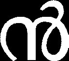<figcaption>Figure fig_ch10_p045_65 (Page 45)</figcaption></figure>
  <figure class="diagram-card" id="fig_ch10_p045_66"><figcaption>Figure fig_ch10_p045_66 (Page 45)</figcaption></figure>
  <div class="page-content">
    <p>ത്ഥ</p>
    <p>1
8</p>
    <p>ത്ഥ</p>
    <p>1
8</p>
    <p>ചഠ-887-4-ങഅഠഒട-10-ങഢഛഘ.2</p>
    <p>1
8</p>
    <p>1
8</p>
    <p>1
8</p>
    <p>ണ്മ </p>
  </div>
</section><section class="page-section" id="page-46">
  <div class="page-header"><span class="page-number">Page 46</span></div>
  <figure class="diagram-card" id="fig_ch10_p046_01"><figcaption>Figure fig_ch10_p046_01 (Page 46)</figcaption></figure>
  <figure class="diagram-card" id="fig_ch10_p046_02"><figcaption>Figure fig_ch10_p046_02 (Page 46)</figcaption></figure>
  <figure class="diagram-card" id="fig_ch10_p046_03"><figcaption>Figure fig_ch10_p046_03 (Page 46)</figcaption></figure>
  <figure class="diagram-card" id="fig_ch10_p046_04"><figcaption>Figure fig_ch10_p046_04 (Page 46)</figcaption></figure>
  <figure class="diagram-card" id="fig_ch10_p046_05"><figcaption>Figure fig_ch10_p046_05 (Page 46)</figcaption></figure>
  <div class="page-content">
    <p>ഗണിതം ത
സ്തൂപിക-യുടെ പാദമായ ചെറിയ വൃത്തത്തിന്റെ ആരം, വൃത്താംശം വെട്ടിയെടുക്കുന്ന വലിയ-വൃത്തത്തിന്റെ ആരത്തിന്റെ 155 = 13 ഭാഗമാണ-ല്ലോ
(അതെങ്ങനെ?). അപ്പോൾ ചെറിയ വൃത്തത്തിന്റെ ചുറ്റള-വും, വലിയ വൃത്തത്തിന്റെ ചുറ്റള-വിന്റെ 13 ഭാഗമാണ്. ചെറിയ വൃത്തത്തിന്റെ ചുറ്റള-വ്, വൃത്താംശത്തിന്റെ ചാപനീള-മാണ-ല്ലോ. അപ്പോൾ വൃത്താംശ-ത്തിന്റെ ചാപം, അതു
വെട്ടിയെടുത്ത വൃത്തത്തിന്റെ 13 ഭാഗമാണ്. അതിനാൽ, അതിന്റെ കേന്ദ്രകോൺ 360 ണ്മ 13 = 120ത്ഥ.
(1)</p>
    <p>(2)</p>
    <p>(3)</p>
    <p>ആരം 10 സെന്റിമീറ്ററും കേന്ദ്രകോൺ 60ത്ഥ ഉം ആയ വൃത്താംശം വളച്ചുണ്ടാക്കുന്ന വൃത്തസ്തൂപിക-യുടെ പാദത്തിന്റെ ആരവും ചരിവുയരവും എത്രയാണ്?
പാദത്തിന്റെ ആരം 10 സെന്റിമീറ്ററും, ചരിവുയരം 25 സെന്റിമീറ്ററുമായ വൃത്തസ്തൂപിക നിർമിക്കാൻ ഉപയോഗിക്കുന്ന വൃത്താംശ-ത്തിന്റെ
കേന്ദ്രകോൺ എത്രയാണ്?
ഒരു അർധവൃത്തം വളച്ചുണ്ടാക്കുന്ന വൃത്തസ്തൂപിക-യുടെ ആരവും
ചരിവുയ-രവും തമ്മിലുള്ള അംശബന്ധം എന്താണ്?</p>
    <p>വക്രത-ലപ-രപ്പളവ്</p>
    <p>വൃത്തസ്തംഭ-ത്തിലെന്നപോലെ, വൃത്തസ്തൂപികയ്ക്കും ഒരു വക്രത-ലമുണ്ട്;
അതിന്റെ ചരിഞ്ഞുയ-രുന്ന ഭാഗം. വൃത്തസ്തൂപിക വളച്ചുണ്ടാക്കാൻ ഉപയോഗിച്ച വൃത്താംശ-ത്തിന്റെ പരപ്പള-വാണ് ഈ വക്രത-ലത്തിന്റെ പരപ്പള-വ്. (വൃത്തസ്തംഭ-ത്തിലും, അതിന്റെ വക്രതലം ചുരുട്ടിയുണ്ടാക്കാൻ ഉപയോഗിച്ച ചതുരത്തിന്റെ പരപ്പള-വാണ-ല്ലോ, വക്രത-ലപ-രപ്പള-വ്.)
ഈ കണക്കു നോക്കുക.
ജിയോജിബ്രയിൽ നിർമിച്ച ആരം 8 സെന്റിമീറ്ററും ചരിവുയരം 30 സെന്റിമീറ്ററുമായ വൃത്തവൃത്തസ്തൂപിക-യുടെ വക്ര- സ്തൂപിക-യുടെ ആകൃതിയിലുള്ള ഒരു തൊപ്പി ഉണ്ടാക്കാൻ
തല പരപ്പളവ് അഹഴലയൃമ യിലെ എത്ര ചതുര-ശ്രസെന്റിമീറ്റർ കടലാസ് വേണം?
ടൗൃളമരല എന്നതിൽ കാണാം.
ഇത്തര-മൊരു തൊപ്പിയുണ്ടാക്കാൻ വേണ്ട വൃത്താംശ-ത്തിന്റെ പരപ്പളവാണ് കണ്ടുപിടിക്കേണ്ടത്. ചരിവുയരം 30 സെന്റിമീറ്റർ വേണ്ടതിനാൽ,
ഇത്രയും ആരമുള്ള വൃത്തത്തിൽ നിന്നു വേണം, വൃത്താംശം മുറിച്ചെടുക്കാൻ.
കൂടാതെ, സ്തൂപിക-യുടെ പാദമായ കൊച്ചുവൃത്തത്തിന്റെ ആരം 8 സെന്റിമീറ്ററായിരിക്കണം. അതായ-ത്, വൃത്താംശം വെട്ടിയെടുക്കുന്ന വലിയ വൃത്തത്തിന്റെ ആരത്തിന്റെ 308 = 154 ഭാഗം. അപ്പോൾ, ചെറുവൃത്തത്തിന്റെ ചുറ്റ198</p>
  </div>
</section><section class="page-section" id="page-47">
  <div class="page-header"><span class="page-number">Page 47</span></div>
  <figure class="diagram-card" id="fig_ch10_p047_01"><figcaption>Figure fig_ch10_p047_01 (Page 47)</figcaption></figure>
  <figure class="diagram-card" id="fig_ch10_p047_02"><figcaption>Figure fig_ch10_p047_02 (Page 47)</figcaption></figure>
  <figure class="diagram-card" id="fig_ch10_p047_03"><figcaption>Figure fig_ch10_p047_03 (Page 47)</figcaption></figure>
  <figure class="diagram-card" id="fig_ch10_p047_04"><figcaption>Figure fig_ch10_p047_04 (Page 47)</figcaption></figure>
  <figure class="diagram-card" id="fig_ch10_p047_05">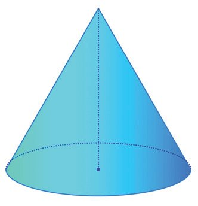<figcaption>Figure fig_ch10_p047_05 (Page 47)</figcaption></figure>
  <figure class="diagram-card" id="fig_ch10_p047_06">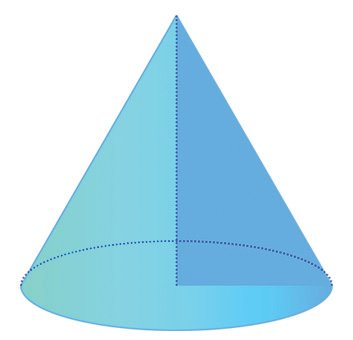<figcaption>Figure fig_ch10_p047_06 (Page 47)</figcaption></figure>
  <div class="page-content">
    <p>ഘനരൂപങ്ങൾ
ളവും, വൻവൃത്തത്തിന്റെ ചുറ്റള-വിന്റെ ഇതേ ഭാഗമാണ്. ചെറുവൃത്തത്തിന്റെ ചുറ്റള-വാണ്, വെട്ടിയെടുക്കേണ്ട വൃത്താംശത്തിന്റെ ചാപത്തിന്റെ നീളം. ഇങ്ങനെ നോക്കുമ്പോൾ, വെട്ടി4</p>
    <p>യെടുക്കേണ്ട വൃത്താംശം, വൃത്തത്തിന്റെ 15 ഭാഗമാണെന്ന്
കാണാം. അതിനാൽ, അതിന്റെ പരപ്പള-വ്, ഈ വൃത്തത്തിന്റെ ഇതേ ഭാഗമാണ്. അതായത്
π ണ്മ 302 ണ്മ</p>
    <p>4
= π ണ്മ 2 ണ്മ 30 ണ്മ 4 = 240π
15</p>
    <p>ഉയരം</p>
    <p>അപ്പോൾ തൊപ്പിയുണ്ടാക്കാൻ 240π ചതുര-ശ്രസെന്റിമീറ്റർ
കടലാസു വേണം. (ക്രിയചെയ്ത്, ഇത് ഏതാണ്ട് 754 ചതുരശ്രസെന്റിമീറ്ററാണെന്ന് കാണാം.)
സമച-തുര-സ്തൂപിക-യിലെന്നപോലെ വൃത്തസ്തൂപിക-യിലും,
പാദത്തിൽ നിന്ന് ശീർഷത്തിലേക്കുള്ള ലംബദൂര-മാണ് ഉയരം. വൃത്തസ്തൂപിക-യിൽ, ഇത്,
പാദമായ വൃത്തത്തിന്റെ കേന്ദ്രവും, ശീർഷവും തമ്മി- ല ഉള്ള
അകല-മാണ്.</p>
    <p>വക്രത-ലപ-രപ്പളവ്</p>
    <p>ഒരു വൃത്തസ്തൂപിക-യുടെ വക്രത-ലപ-രപ്പ- ള - വ ് , അതു- ണ്ട ആ- ക്ക ആ- ന ഉ- പ - ഏയാ- ഗ ഇച്ച
വൃത്താംശ-ത്തിന്റെ പരപ്പള-വുത-ന്നെയാണല്ലോ. സ്തൂപിക-യുടെ പാദ ആരം ഋ എന്നും,
ചരിവുയരം ഹ എന്ന്മെടുത്താൽ, വൃത്താംശത്തിന്റെ ആരം ഹ എന്നും, കേന്ദ്രകോൺ
ഋ
ഈ
ണ്മ 360 എന്നും കിട്ടും. അപ്പോൾ അതിന്റെ
ഹ</p>
    <p>പരപ്പള-വ്,</p>
    <p>1
⎛ൃ
⎞
2
ണ്മ ⎜ ണ്മ 360 ⎟ ണ്മ π ഹ = π ഋഹ
360 ⎝ ഹ
⎠</p>
    <p>എന്ന് കണ- ക്ക ആ- ക്ക ആം. (ഒമ്പ- ത ആംക്ലാസിൽ വൃത്താംശ-ത്തിന്റെ പരപ്പളവ്
കണ്ടുപിടിച്ചത് ഓർക്കുക.)
അതായ-ത്, വൃത്തസ്തൂപിക-യുടെ വക്രതല-പര-പ്പളവ്, പാദചുറ്റള-വിന്റേയും ചരിവുയ-രത്തിന്റേയും ഗുണന-ഫല-ത്തിന്റെ
പകുതിയാണ്.</p>
    <p>199</p>
    <p>ം</p>
    <p>2</p>
    <p>-യര</p>
    <p>2</p>
    <p>ഇവു</p>
    <p>ഉയരം</p>
    <p>ചര</p>
    <p>സമച-തുരസ്തൂപിക-യിലെന്നപോലെ വൃത്തസ്തൂപിക-യിലും, ഉയരവും ചരിവുയ-രവും തമ്മിലൊരു മട്ടത്രികോണ-ബന്ധമുണ്ട്:
ഉദാഹ-രണ-മായി പാദത്തിന്റെ ആരം 5 സെന്റിമീറ്ററും ഉയരം
10 സെന്റിമീറ്ററും ആയ വൃത്തസ്തൂപിക-യുടെ ചരിവുയരം
5 + 10 = 125 = 5 5 സെന്റിമീറ്ററാണ്.
പാദ ആരം
(1) പാദത്തിന്റെ ആരം 12 സെന്റിമീറ്ററും, ചരിവുയരം 25 സെന്റിമീറ്ററും
ആയ ഒരു വൃത്തസ്തൂപിക-യുടെ വക്രതല പരപ്പളവ് എത്രയാണ്?
(2) പാദത്തിന്റെ വ്യാസം 30 സെന്റിമീറ്ററും ഉയരം 40 സെന്റിമീറ്ററുമായ
വൃത്തസ്തൂപിക-യുടെ ഉപരിത-ലപ-രപ്പളവ് എത്രയാണ്?
(3) വൃത്തസ്തൂപിക-യുടെ ആകൃതിയിലുള്ള ഒരു പൂക്കുറ്റിയുടെ പാദവ്യാസം 10 സെന്റിമീറ്ററും ഉയരം 12 സെന്റിമീറ്ററുമാണ്. ഇത്തരം 10000
പൂക്കുറ്റിക-ളുടെ പുറംഭാഗം മുഴുവൻ വർണക്കട-ലാസ് ഒട്ടിക്കണം. ഒരു
ചതുര-ശ്രമീറ്റർ വർണക്കട-ലാസിന് 2 രൂപയാണ് വില. ഇതിന് ആകെ
എത്ര രൂപ ചെലവാകും?</p>
  </div>
</section><section class="page-section" id="page-48">
  <div class="page-header"><span class="page-number">Page 48</span></div>
  <figure class="diagram-card" id="fig_ch10_p048_01"><figcaption>Figure fig_ch10_p048_01 (Page 48)</figcaption></figure>
  <figure class="diagram-card" id="fig_ch10_p048_02"><figcaption>Figure fig_ch10_p048_02 (Page 48)</figcaption></figure>
  <figure class="diagram-card" id="fig_ch10_p048_03"><figcaption>Figure fig_ch10_p048_03 (Page 48)</figcaption></figure>
  <figure class="diagram-card" id="fig_ch10_p048_04"><figcaption>Figure fig_ch10_p048_04 (Page 48)</figcaption></figure>
  <figure class="diagram-card" id="fig_ch10_p048_05"><figcaption>Figure fig_ch10_p048_05 (Page 48)</figcaption></figure>
  <div class="page-content">
    <p>ഗണിതം ത
(4)</p>
    <p>ഒരു അർധവൃത്തം വളച്ചുണ്ടാക്കുന്ന വൃത്തസ്തൂപിക-യുടെ വക്രത-ലപര-പ്പളവ് അതിന്റെ പാദപ-രപ്പള-വിന്റെ രണ്ട്മ-ടങ്ങാണെന്ന് തെളിയിക്കുക.</p>
    <p>വൃത്തസ്തൂപിക-യുടെ വ്യാപ്തം</p>
    <p>സമച-തുരസ്തൂപിക-യുടെ വ്യാപ്തം കാണാൻ ചെയ്തതുപോലെ ഒരു പരീക്ഷണം ഇവിടെയുമാകാം. ഒരു വൃത്തസ്തൂപിക ഉണ്ടാക്കുക. അതേ പാദവും
ഉയര-വുമുള്ള ഒരു വൃത്തസ്തംഭവും. സ്തൂപിക-യിൽ മണൽ നിറച്ച് വൃത്തസ്തംഭ-ത്തിലേക്ക് പകർന്നുനോക്കൂ. ഇവിടെയും സ്തൂപിക-യുടെ വ്യാപ്തം,
വൃത്തസ്തംഭ-ത്തിന്റെ വ്യാപ്തത്തിന്റെ മൂന്നിലൊന്നാണെന്ന് കാണാം. അതായത്,
വൃത്തസ്തൂപിക-യുടെ വ്യാപ്തം, പാദപ-രപ്പള-വിന്റേയും ഉയര-ത്തിന്റേയും ഗുണന-ഫല-ത്തിന്റെ മൂന്നിലൊന്നാണ്.</p>
    <p>വൃത്തസ്തൂപികാവ്യാപ്തം</p>
    <p>സ്തൂപികാവ്യാപ്തം എന്നഭാഗത്ത് ചെയ്തത്പോലെ ഒരേ
പാദവും ഒരേ ഉയര-വുമുള്ള
ഒരു വൃത്തസ്തൂപികയും ഒരു
വൃത്തസ്തംഭവും നിർമിക്കുക. ഇവയുടെ വ്യാപ്തം താരതമ്യം ചെയ്യുക.
(1)</p>
    <p>(2)</p>
    <p>(3)</p>
    <p>(4)</p>
    <p>(5)</p>
    <p>(ഇതിന്റെയും ഗണിത-പര-മായ വിശദീക-രണം, പാഠത്തിന്റെ അവസാനം
കൊടുത്തിട്ടുണ്ട്).
ഉദാഹ-രണ-മായി, പാദത്തിന്റെ ആരം 4 സെന്റിമീറ്ററും, ഉയരം 6 സെന്റിമീറ്ററുമായ വൃത്തസ്തൂപിക-യുടെ വ്യാപ്തം
1
ണ്മ π ണ്മ 42 ണ്മ 6 = 32π ഘനസെന്റിമീറ്ററാണ്.
3</p>
    <p>വൃത്തസ്തംഭാകൃതിയിലുള്ള ഒരു തട-ിക്കഷ-ണത്തിന്റെ പാദത്തിന്റെ
ആരം 15 സെന്റിമീറ്ററും ഉയരം 40 സെന്റിമീറ്ററുമാണ്. ഇതിൽ നിന്ന്
ചെത്തിയെടുക്കാവുന്ന ഏറ്റവും വലിയ വൃത്തസ്തൂപിക-യുടെ വ്യാപ്തം
എത്രയാണ്?
പാദത്തിന്റെ ആരം 12 സെന്റിമീറ്ററും ഉയരം 20 സെന്റിമീറ്ററുമായ കട്ടിയായ ഒരു വൃത്തസ്തംഭം ഉരുക്കി, പാദത്തിന്റെ ആരം 4 സെന്റിമീറ്ററും
ഉയരം 5 സെന്റിമീറ്ററുമായ എത്ര വൃത്തസ്തൂപിക-കൾ ഉണ്ടാക്കാം?
216ീ കേന്ദ്രകോണും 25 സെന്റിമീറ്റർ ആരവുമുള്ള ഒരു വൃത്താംശം
വളച്ച് വൃത്തസ്തൂപിക ആക്കിയാൽ അതിന്റെ ആരവും ഉയര-വും എത്രയായിരിക്കും? വ്യാപ്തമോ?
രണ്ട് വൃത്തസ്തൂപിക-കളുടെ ആരങ്ങളുടെ അംശബന്ധം 3 : 5, അവയുടെ ഉയരങ്ങൾ തമ്മിലുള്ള അംശബന്ധം 2 : 3, അവയുടെ വ്യാപ്തങ്ങളുടെ അംശബന്ധം എത്രയാണ്?
തുല്യ- വ ്യാ- പ ് ത - മ ഉള്ള രണ്ട് വൃത്ത- സ ് ത ഊ- പ ഇ- ക - ക - ള ഉടെ ആര- ങ്ങ ൾ
4 : 5 എന്ന അംശബ-ന്ധത്തിലാണ്. അവയുടെ ഉയര-ങ്ങളുടെ അംശബന്ധം കണ്ടുപിടിക്കുക.</p>
    <p>200</p>
  </div>
</section><section class="page-section" id="page-49">
  <div class="page-header"><span class="page-number">Page 49</span></div>
  <figure class="diagram-card" id="fig_ch10_p049_01"><figcaption>Figure fig_ch10_p049_01 (Page 49)</figcaption></figure>
  <figure class="diagram-card" id="fig_ch10_p049_02"><figcaption>Figure fig_ch10_p049_02 (Page 49)</figcaption></figure>
  <figure class="diagram-card" id="fig_ch10_p049_03">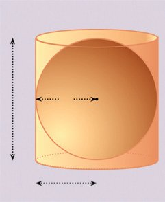<figcaption>Figure fig_ch10_p049_03 (Page 49)</figcaption></figure>
  <figure class="diagram-card" id="fig_ch10_p049_04">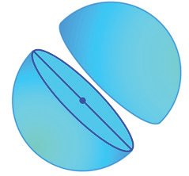<figcaption>Figure fig_ch10_p049_04 (Page 49)</figcaption></figure>
  <div class="page-content">
    <p>ഘനരൂപങ്ങൾ
ഗോളം</p>
    <p>പന്തുക-ളിയുടെ ഹരമായും, ലഡ്ഡുവിന്റെ മധുരമായുമൊക്കെ ഗോളങ്ങൾ ആസ്വദിച്ചിട്ടുണ്ടല്ലോ. ഇനി ഗോളത്തിന്റെ ഗണിത-മാവാം.
(ഇംഗ്ലീഷിൽ ഗോളത്തിന് ഉെവലൃല എന്നാണു
പേര്.)
വൃത്തസ്തംഭ-ത്തിനെയോ, വൃത്തസ്തൂപികയെയോ പാദത്തിനു സമാന്തര-മായി മുറിച്ചാൽ,
വൃത്തം കിട്ടും. ഗോളത്തെ എങ്ങനെ മുറിച്ചാലും വൃത്തം കിട്ടും:
ഒരു വൃത്തത്തിന്റെ കേന്ദ്രത്തിൽ നിന്ന് അതിലെ ഏതു ബിന്ദുവിലേക്കുമുള്ള അകലം തുല്യമാണ-ല്ലോ. ഗോളത്തിനുമുണ്ടൊരു കേന്ദ്രം; അതിൽ നിന്ന് ഗോളോപ-രിത-ലത്തിലുള്ള
ബിന്ദുക്കൾക്കെല്ലാം ഒരേ അകല-മാണ്. ഈ അകലത്തെ
ഗോളത്തിന്റെ ആരം എന്ന് പറയുന്നു; അതിന്റെ രണ്ട് മടങ്ങിനെ വ്യാസമെന്നും.
ഒരു ഗോളത്തെ കൃത്യം പകുതിയായി മുറി- ച്ച ആൽ ഉണ്ടാ- ക ഉന്ന
വൃത്തത്തിന്റെ കേന്ദ്രവും ആരവും വ്യാസവുമൊക്കെയാണ്,
ഗോള- ത്ത ഇ- എന്റയും കേന്ദ്ര- വ ഉം
ആരവും വ്യാസവും.
ഇതുവ-രെക്കണ്ട രൂപങ്ങളിൽ ചെയ്തപോലെ, ഗോളത്തെ
മുറിച്ചു നിവർത്തി ഉപരിത-ലപ-രപ്പളവ് കണ്ടുപിടിക്കാൻ കഴിയി- ല്ല . അൽപം ചുളി- ഏവാ, വലി- ച്ച ഉ- ന ഈ- ട്ട ലോ ഇല്ലാ- എത,
ഗോളത്തെ മുറിച്ചു നിരപ്പാക്കാൻ കഴിയില്ല എന്നതാണു
കാര്യം.
എന്നാൽ ഒരു ഗോളത്തിന്റെ ആരം ഋ എന്നെടുത്താൽ, ഉപരിത-ലപ-രപ്പളവ് 4πൃ2 ആണെന്ന് തെളിയിക്കാം. (വിശദീകരണം പാഠത്തിന്റെ അവസാനം ചേർത്തിട്ടുണ്ട്).
മറ്റൊരുരീതിയിൽ പറഞ്ഞാൽ
ഗോളത്തിന്റെ ഉപരിത-ലപ-രപ്പള-വ്, അതിന്റെ ആരത്തിന്റെ വർഗത്തിനെ 4ു കൊണ്ട് ഗുണിച്ചതാണ്.</p>
    <p>കൂടാതെ ആരം ഋ ആയ ഗോളത്തിന്റെ വ്യാപ്തം 43 πൃ എന്ന്
തെളിയിക്കപ്പെട്ടിട്ടുണ്ട്. (ഇതിന്റെയും വിശദീക-രണം പാഠത്തിന്റെ അവസാനം കൊടുത്തിട്ടുണ്ട്).
3</p>
    <p>201</p>
    <p>ഗോളവും സ്തംഭവും</p>
    <p>ഒരു ഗോളത്തിനെ കൃത്യമായി പൊതിയുന്ന വൃത്തസ്തംഭ-ത്തിന്റെ ആരം, ഗോളത്തിന്റെ തന്നെ ആരവും ഉയരം, ഈ ആരത്തിന്റെ രണ്ട്
മടങ്ങുമാണല്ലോ:
അതായ-ത്,
2ൃ
ഗോളത്തിന്റെ
ആരം ഋ എന്നെടുത്താൽ,
വൃത്തസ്തംഭത്തിന്റെ
ആരം ഋ, ഉയരം 2ൃ</p>
    <p>ഋ</p>
    <p>ഋ</p>
    <p>. അപ്പോൾ വൃത്ത-</p>
    <p>സ്തംഭ-ത്തിന്റെ</p>
    <p>ഉപരിതലപരപ്പള-വ്.</p>
    <p>(2πൃ ണ്മ 2ൃ) + (2 ണ്മ πൃ2) = 6πൃ2
ഗോളത്തിന്റെ ഉപരിത-ലപ-രപ്പള-വ്
രണ്ട്</p>
    <p>പരപ്പള-വുകളും</p>
    <p>തമ്മിലുള്ള</p>
    <p>3:2</p>
    <p>അംശബന്ധം</p>
    <p>മാത്രവുമ-ല്ല,</p>
    <p>4πൃ2. ഈ</p>
    <p>സ്തംഭത്തിന്റെ</p>
    <p>വ്യാപ്തം</p>
    <p>πൃ2 ണ്മ 2ൃ = 2πൃ3 ഉം
ഗോളത്തിന്റെ</p>
    <p>വ്യാപ്തം</p>
    <p>4 3
πൃ
3</p>
    <p>ഉം</p>
    <p>ആയ-</p>
    <p>തിനാൽ, വ്യാപ്തങ്ങൾ തമ്മിലുള്ള അംശബന്ധവും</p>
    <p>3 : 2 തന്നെ.</p>
  </div>
</section><section class="page-section" id="page-50">
  <div class="page-header"><span class="page-number">Page 50</span></div>
  <figure class="diagram-card" id="fig_ch10_p050_01"><figcaption>Figure fig_ch10_p050_01 (Page 50)</figcaption></figure>
  <figure class="diagram-card" id="fig_ch10_p050_02">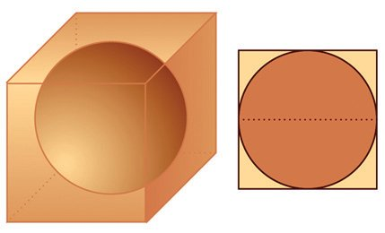<figcaption>Figure fig_ch10_p050_02 (Page 50)</figcaption></figure>
  <figure class="diagram-card" id="fig_ch10_p050_03">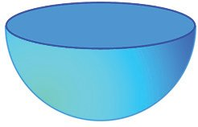<figcaption>Figure fig_ch10_p050_03 (Page 50)</figcaption></figure>
  <figure class="diagram-card" id="fig_ch10_p050_04">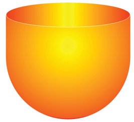<figcaption>Figure fig_ch10_p050_04 (Page 50)</figcaption></figure>
  <figure class="diagram-card" id="fig_ch10_p050_05">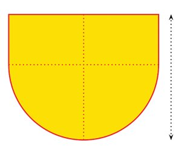<figcaption>Figure fig_ch10_p050_05 (Page 50)</figcaption></figure>
  <div class="page-content">
    <p>ഗണിതം ത
ഈ കണക്ക് നോക്കൂ:
വക്കുക-ളുടെയെല്ലാം നീളം 8 സെന്റിമീറ്ററായ ഒരു സമച-തുര-ക്കട്ടയിൽ
നിന്ന് ചെത്തിയെടുക്കാവുന്ന ഏറ്റവും വലിയ ഗോളത്തിന്റെ ഉപരിതലപ-രപ്പളവ് എത്രയാണ്?
ഗോളത്തിന്റെ വ്യാസം, സമച-തുര-ക്കട്ടയുടെ
വക്കിന്റെ നീളമാണെന്ന് ചിത്രത്തിൽനിന്നു
കാണാമ-ല്ലോ. അപ്പോൾ ഗോളത്തിന്റെ ഉപരി8 സെ.മീ.
തല-പര-പ്പളവ്
4π ണ്മ 4 = 64π ചതുര-ശ്രസെന്റിമീറ്റർ
8 സെ.മീ.
മറ്റൊരു കണക്കുനോക്കാം:
12 സെന്റി- മ ഈ- റ്റ ർ ആര- മ ഉള്ള കട്ടി- യ ആയ ഒരു
ഗോളത്തെ രണ്ട് സമഭാഗ-ങ്ങളായി മുറിച്ചു
കിട്ടുന്ന ഒരു അർധഗോളത്തിന്റെ (വലാശുെവലൃല)
ഉപരിത-ലപ-രപ്പളവ് എത്രയാണ്?
ഗോളത്തിന്റെ ഉപരിത-ലത്തിന്റെ പകുതിയും ഒരു
വൃത്തവും ചേർന്നതാണല്ലോ അർധഗോളം.
ഗോളത്തിന്റെ ആരം 12 സെന്റിമീറ്റർ ആയതിനാൽ, അതിന്റെ ഉപരിത-ലപ-രപ്പളവ്
4π ണ്മ 12 = 576π ചതുര-ശ്രസെന്റിമീറ്റർ
ഇതിന്റെ പകുതിയും വൃത്തത്തിന്റെ പരപ്പളവും ചേർന്നതാണ് അർധഗോളത്തിന്റെ ഉപരിത-ലപ-രപ്പള-വ്. വൃത്തത്തിന്റെ ആരവും 12 സെന്റിമീറ്റർ തന്നെ
ആയതിനാൽ, അതിന്റെ പരപ്പളവ്
π ണ്മ 12 = 144π ചതുര-ശ്രസെന്റിമീറ്റർ
അപ്പോൾ അർധഗോള-ത്തിന്റെ ഉപരിത-ലപ-രപ്പളവ്
1
ണ്മ 576π + 144π = 432π ചതുര-ശ്രസെന്റിമീറ്റർ
2
ഒരു ഉദാഹ-രണം കൂടിയാകാം:
വൃത്തസ്തംഭ-ത്തിന്റെ ഒരറ്റത്ത് അർധഗോളം ഘടിപ്പിച്ച രൂപത്തിലുള്ള
ഒരു ജലസംഭ-രണിയുടെ ആകെ ഉയരം 2.5 മീറ്ററും, പാദത്തിന്റെ ആരം
1.5 മീറ്ററുമാണ്. ഇതിൽ എത്ര ലിറ്റർ വെള്ളം കൊള്ളും?
2</p>
    <p>2</p>
    <p>1.5 മീറ്റർ
1.5 മീറ്റർ</p>
    <p>1.5 മീറ്റർ</p>
    <p>202</p>
    <p>2.5 മീറ്റർ</p>
    <p>2</p>
  </div>
</section><section class="page-section" id="page-51">
  <div class="page-header"><span class="page-number">Page 51</span></div>
  <figure class="diagram-card" id="fig_ch10_p051_01"><figcaption>Figure fig_ch10_p051_01 (Page 51)</figcaption></figure>
  <figure class="diagram-card" id="fig_ch10_p051_02"><figcaption>Figure fig_ch10_p051_02 (Page 51)</figcaption></figure>
  <figure class="diagram-card" id="fig_ch10_p051_03"><figcaption>Figure fig_ch10_p051_03 (Page 51)</figcaption></figure>
  <figure class="diagram-card" id="fig_ch10_p051_04"><figcaption>Figure fig_ch10_p051_04 (Page 51)</figcaption></figure>
  <figure class="diagram-card" id="fig_ch10_p051_05"><figcaption>Figure fig_ch10_p051_05 (Page 51)</figcaption></figure>
  <figure class="diagram-card" id="fig_ch10_p051_06"><figcaption>Figure fig_ch10_p051_06 (Page 51)</figcaption></figure>
  <figure class="diagram-card" id="fig_ch10_p051_07"><figcaption>Figure fig_ch10_p051_07 (Page 51)</figcaption></figure>
  <div class="page-content">
    <p>ഘനരൂപങ്ങൾ
ടാങ്കിലെ അർധഗോളഭാഗത്തിന്റെ വ്യാപ്തം
2
π ണ്മ (1.5)3 = 2.25π ഘനമീറ്റർ
3</p>
    <p>വൃത്തസ്തംഭഭാഗത്തിന്റെ വ്യാപ്തം</p>
    <p>π ണ്മ (1.5)2 (2.5 − 1.5) = 2.25π ഘനമീറ്റർ
അപ്പോൾ ടാങ്കിന്റെ ആകെ വ്യാപ്തം
2.25π + 2.25π = 4.5π ≈ 14.13 ഘനമീറ്റർ</p>
    <p>ഒരു ഘനമീറ്റർ എന്നത്, 1000 ലിറ്ററായ-തിനാൽ, ടാങ്കിൽ ഏകദേശം 14130
ലിറ്റർ വെള്ളം- കൊള്ളും.</p>
    <p>(2)</p>
    <p>(3)</p>
    <p>(4)</p>
    <p>(5)</p>
    <p>(6)</p>
    <p>കട്ടിയായ ഒരു ഗോളത്തിന്റെ ഉപരിതലപരപ്പളവ് 120 ചതുരശ്രസെന്റിമീറ്ററാണ്. അത് മുറിച്ച് രണ്ട് അർധഗോളങ്ങളാക്കിയാൽ ഓരോന്നിന്റെയും ഉപരിതലപരപ്പളവ് എന്തായിരിക്കും?
രണ്ട്- ഗോ- ള - ങ്ങ - ള ഉടെ വ്യാപ് ത - ങ്ങ ൾ തമ്മി- ല ഉ- ള്ള അംശ- ബ ന്ധം
27 : 64 ആണ് . അവ- യ ഉടെ ആര- ങ്ങ ൾ തമ്മി- ല ഉള്ള അംശ- ബ ന്ധം
എന്താണ്? ഉപരിതലപരപ്പള-വുക-ളുടെ അംശബ-ന്ധമോ?
ലോഹം കൊണ്ടുണ്ടാക്കിയ ഒരു വൃത്തസ്തംഭ-ത്തിന്റെ നീളം 10 സെന്റിമീറ്ററും, ആരം 4 സെന്റിമീറ്ററുമാണ്. ഇതുരുക്കി, 2 സെന്റിമീറ്റർ ആരമുള്ള എത്ര ഗോളങ്ങളുണ്ടാക്കാം?
12 സെന്റിമീറ്റർ ആരമുള്ള ഒരു ലോഹഗോളത്തെ ഉരുക്കി തുല്യവ-ലുപ്പമുള്ള കട്ടിയായ 27 ചെറുഗോള-ങ്ങളുണ്ടാക്കി. ചെറുഗോള-ങ്ങളുടെ ആരമെന്തായിരിക്കും?
10 സെന്റിമീറ്റർ ആരമുള്ള കട്ടിയായ ഒരു ഗോളത്തിൽനിന്ന്, 16 സെന്റിമീറ്റ-ർ ഉയര-വും പരമാവധി വലുപ്പവുമുള്ള ഒരു വൃത്തസ്തൂപിക വെട്ടിയെടുത്തു. സ്തൂപിക-യുടെ വ്യാപ്തം, ഗോളത്തിന്റെ വ്യാപ്തത്തിന്റെ
എത്ര ഭാഗമാണ്?
ഒരു പെട്രോൾ ടാങ്കിന്റെ ചിത്രമാണ് ചുവടെ- കൊടുത്തിരിക്കുന്നത്:
1 മീറ്റർ</p>
    <p>1 മീറ്റർ</p>
    <p>2 മീറ്റർ</p>
    <p>(1)</p>
    <p>1 മീറ്റർ
6 മീറ്റർ</p>
    <p>ഇതിൽ എത്ര ലിറ്റർ പെട്രോൾ കൊള്ളും?</p>
    <p>203</p>
  </div>
</section><section class="page-section" id="page-52">
  <div class="page-header"><span class="page-number">Page 52</span></div>
  <figure class="diagram-card" id="fig_ch10_p052_01"><figcaption>Figure fig_ch10_p052_01 (Page 52)</figcaption></figure>
  <figure class="diagram-card" id="fig_ch10_p052_02"><figcaption>Figure fig_ch10_p052_02 (Page 52)</figcaption></figure>
  <figure class="diagram-card" id="fig_ch10_p052_03"><figcaption>Figure fig_ch10_p052_03 (Page 52)</figcaption></figure>
  <figure class="diagram-card" id="fig_ch10_p052_04"><figcaption>Figure fig_ch10_p052_04 (Page 52)</figcaption></figure>
  <div class="page-content">
    <p>ഗണിതം ത
(7)</p>
    <p>കട്ടിയായ ഒരു ഗോളം, രണ്ട് അർധഗോളങ്ങളായി മുറിച്ച്, ഒന്നിൽനിന്ന്
പരമാവധി വലുപ്പമുള്ള സമച-തുര-സ്തൂപിക-യും, മറ്റൊന്നിൽനിന്ന് പരമാവധി വലുപ്പമുള്ള വൃത്തസ്തൂപികയും മുറിച്ചെടുക്കുന്നു. ഇവയുടെ
വ്യാപ്തം തമ്മിലുള്ള അംശബന്ധം എന്താണ്?
കട്ടിയായ ഒരു അർധഗോള-ത്തിൽനിന്ന് ചെത്തിയെടുക്കുന്ന
പരമാവധി വലിയ സമച-തുര-സ്തൂപിക-യുടെ പാർശ്വമുഖ-ങ്ങളുടെ പ്രതേ്യക-ത- എന്താണ്?</p>
    <p>204</p>
  </div>
</section><section class="page-section" id="page-53">
  <div class="page-header"><span class="page-number">Page 53</span></div>
  <figure class="diagram-card" id="fig_ch10_p053_01"><figcaption>Figure fig_ch10_p053_01 (Page 53)</figcaption></figure>
  <figure class="diagram-card" id="fig_ch10_p053_02">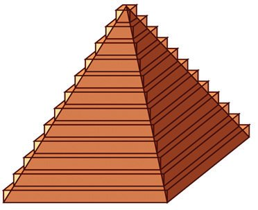<figcaption>Figure fig_ch10_p053_02 (Page 53)</figcaption></figure>
  <figure class="diagram-card" id="fig_ch10_p053_03">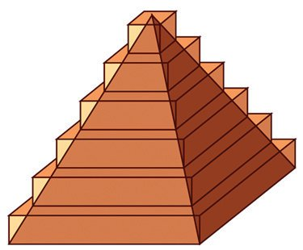<figcaption>Figure fig_ch10_p053_03 (Page 53)</figcaption></figure>
  <figure class="diagram-card" id="fig_ch10_p053_04">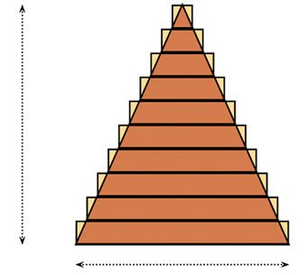<figcaption>Figure fig_ch10_p053_04 (Page 53)</figcaption></figure>
  <div class="page-content">
    <p>ഘനരൂപങ്ങൾ</p>
    <p>അനുബസ്ന്ധംതൂപിക-യുടെ വ്യാപ്തവും, ഗോളത്തിന്റെ ഉപരിതലപരപ്പള-വും, വ്യാപ്തവും</p>
    <p>കണ്ടുപിടിക്കാനുള്ള ക്രിയകൾ മാത്രമാണല്ലോ കണ്ടത്. ഇവ എങ്ങനെ കിട്ടി
എന്നറിയാൻ താത്പര്യമുള്ളവർക്ക് വേണ്ടി, അവയുടെ വിശദീക-രണ-ങ്ങൾ
ചുവടെ കൊടുക്കുന്നു.
സമച-തുര-സ്തൂപിക-യുടെ വ്യാപ്തം</p>
    <p>ഒരു സമച-തുര-സ്തൂപിക-യുടെ ഏകദേശരൂപ-മായി കുറെ സമചതുര-പ്പല-കകളുടെ
കൂട്ടം സങ്കൽപിക്കാം.
പലക-കളുടെ കനം കുറയുക-യും, എണ്ണം
കൂടുകയും ചെയ്യുന്നതിനനുസ-രിച്ച്, അവയുടെ അടുക്ക് കൂടുതൽ സ്തൂപികാസമാന-മാകും.
അപ്പോൾ ഈ പലക-കളുടെ വ്യാപ്തത്തിന്റെ തുക, സ്തൂപിക-യുടെ വ്യാപ്തത്തോട് അടുത്തടുത്തു വരും.
ഉദാഹ-രണ-മായി, 10</p>
    <p>പലക-കളാണ് ഉപയോഗിച്ചതെന്ന് കരുതുക. ഓരോ</p>
    <p>പലകയും ഒരു സമച-തുര-സ്തംഭ-മാണല്ലോ; ഇവയുടെ ഉയരം തുല്യമായിട്ടെടുക്കാം. അപ്പോൾ സ്തൂപിക-യുടെ ഉയരം
യുടെ ഉയരം</p>
    <p>വ എന്നെടുത്താൽ, ഒരു പലക-</p>
    <p>1
വ. ഇനി ഓരോ പലക-യുടേയും പാദം എങ്ങനെ കണ്ടുപി10</p>
    <p>ടിക്കും?
സ്തൂപിക-യേയും അതിനെ പൊതിഞ്ഞു
നിൽക്കുന്ന പലക-കളുടെ അടുക്കിനേയും
ശീർഷത്തിലൂടെ കുത്തനെ മുറിച്ചാൽ,</p>
    <p>വ</p>
    <p>ഇത്തര-മൊരു രൂപം കിട്ടം:</p>
    <p>മുകളിൽനിന്നു തുടങ്ങി, സമപാർശ്വത്രികോണ-ങ്ങൾ വലുതായി വരുന്നുണ്ടല്ലോ; ഇവയുടെ ഉയരം വർധിക്കുന്നത്, ഓരോ പലക-യിലും</p>
    <p>205</p>
    <p>1
വ എന്ന നിര10</p>
  </div>
</section><section class="page-section" id="page-54">
  <div class="page-header"><span class="page-number">Page 54</span></div>
  <figure class="diagram-card" id="fig_ch10_p054_01"><figcaption>Figure fig_ch10_p054_01 (Page 54)</figcaption></figure>
  <div class="page-content">
    <p>ഗണിതം ത</p>
    <p>ക്കിലാണ്. ഇവയെല്ലാം സദൃശ-മായ-തിനാൽ (എന്തുകൊണ്ട്?) പാദങ്ങളും
ഇതേ നിരക്കിൽത്തന്നെ കൂടണം. അതായ-ത്, സ്തൂപിക-യുടെ പാദം യ എന്നെടുത്താൽ, മുകളിൽനിന്നുള്ള ത്രികോണ-ങ്ങളുടെ പാദം യ, യ, ...., യ എന്നിങ്ങനെയാണ്.
അപ്പോൾ ഈ പലക-കളുടെ വ്യാപ്തം
1
10</p>
    <p>2</p>
    <p>2
10</p>
    <p>2</p>
    <p>1 ⎛2 ⎞
1
1
⎛1 ⎞
2
⎜ യ ⎟ ണ്മ വ, ⎜ യ ⎟ ണ്മ വ, ...യ ണ്മ വ
10
10
10
10
10
⎝
⎠
⎝
⎠</p>
    <p>എന്നിങ്ങനെയാണ്, അവയുടെ തുകയോ?</p>
    <p>1 2 ⎛ 1
22
92 102 ⎞
1 2 2
യ വ ⎜ 2 + 2 + ... + 2 + 2 ⎟ =
യ വ (1 + 2 2 + 32 + ... + 10 2 )
10
10
10 10 ⎠
1000
⎝ 10</p>
    <p>ഇത്തരം തുകകൾ കണ്ടുപിടിക്കാനൊരു മാർഗം, സമാന്തര-ശ്രേണികൾ എന്ന
പാഠത്തിലെ വർഗങ്ങളുടെ തുകകൾ എന്ന ഭാഗത്തു പറഞ്ഞിട്ടുണ്ടല്ലോ.
12 + 22 + 32 + ... + 102 =</p>
    <p>അപ്പോൾ വ്യാപ്തത്തിന്റെ തുക</p>
    <p>1
ണ്മ 10 ണ്മ (10 + 1) ണ്മ (2 ണ്മ 10 + 1)
6</p>
    <p>1 2 1
1
10 11 21 1 2
യ വ ണ്മ ണ്മ 10 ണ്മ 11 ണ്മ 21 = യ 2 വ ണ്മ ണ്മ ണ്മ
= യ വ ണ്മ 1.1 ണ്മ 2.1
1000
6
6
10 10 10 6</p>
    <p>ഇനി ഇതുപോലെ 100 പലക-കൾ സങ്കൽപ്പിച്ചു നോക്കൂ (അതേതായാലും
വരയ്ക്കാൻ കഴിയില്ല).
പലക-കളുടെ കനം ആകും; പാദങ്ങളുടെ വശം
എന്നിങ്ങനെയാകും. വ്യാപ്തങ്ങളുടെ തുക
1
2
3
യ,
യ,
യ,..., യ
100 100 100</p>
    <p>1
വ
100</p>
    <p>1 2 2
1 2
1
യ വ ണ്മ ണ്മ 100 ണ്മ 101 ണ്മ 201
യ വ (1 + 2 2 + 32 + ... + 100 2 ) =
1003
6
1003</p>
    <p>1
100 101 201
= യ2വ ണ്മ
ണ്മ
ണ്മ
6
100 100 100
1
= യ 2 വ ണ്മ 1.01 ണ്മ 2.01
6</p>
    <p>പലക-കളുടെ എണ്ണം 1000 ആക്കിയാലോ? കണക്കുകൂട്ടാതെ തന്നെ വ്യാപ്തങ്ങളുടെ തുക
1 2
യ വ ണ്മ 1.001 ണ്മ 2.001
6</p>
    <p>എന്ന് കാണാമ-ല്ലോ. ഈ തുകകൾ ഏതു സംഖ്യയോടാണ് അടുത്തടുത്തുവരുന്നത്?
ഇതാണ് സ്തൂപിക-യുടെ വ്യാപ്തം. അതായത്
1 2
1
യ വ ണ്മ 1 ണ്മ 2 = യ2വ
6
3</p>
    <p>206</p>
  </div>
</section><section class="page-section" id="page-55">
  <div class="page-header"><span class="page-number">Page 55</span></div>
  <figure class="diagram-card" id="fig_ch10_p055_01"><figcaption>Figure fig_ch10_p055_01 (Page 55)</figcaption></figure>
  <figure class="diagram-card" id="fig_ch10_p055_02">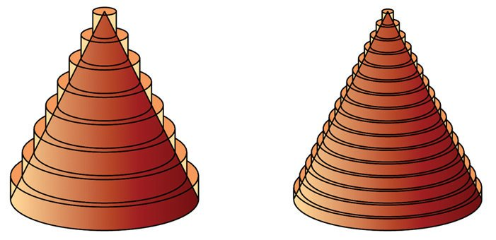<figcaption>Figure fig_ch10_p055_02 (Page 55)</figcaption></figure>
  <figure class="diagram-card" id="fig_ch10_p055_03">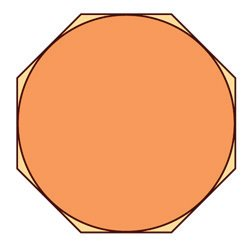<figcaption>Figure fig_ch10_p055_03 (Page 55)</figcaption></figure>
  <figure class="diagram-card" id="fig_ch10_p055_04">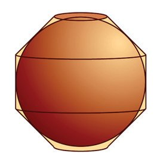<figcaption>Figure fig_ch10_p055_04 (Page 55)</figcaption></figure>
  <figure class="diagram-card" id="fig_ch10_p055_05">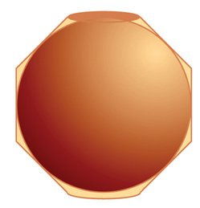<figcaption>Figure fig_ch10_p055_05 (Page 55)</figcaption></figure>
  <figure class="diagram-card" id="fig_ch10_p055_06">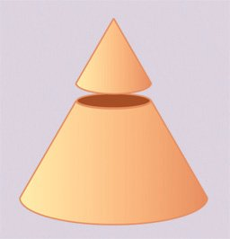<figcaption>Figure fig_ch10_p055_06 (Page 55)</figcaption></figure>
  <figure class="diagram-card" id="fig_ch10_p055_07">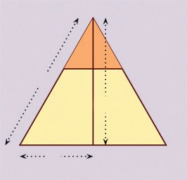<figcaption>Figure fig_ch10_p055_07 (Page 55)</figcaption></figure>
  <figure class="diagram-card" id="fig_ch10_p055_08">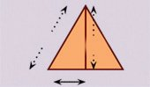<figcaption>Figure fig_ch10_p055_08 (Page 55)</figcaption></figure>
  <div class="page-content">
    <p>ഘനരൂപങ്ങൾ</p>
    <p>വൃത്തസ്തൂപിക-യുടെ വ്യാപ്തം</p>
    <p>സമചതുര-പ്പല-കക-ളടുക്കി, സമച-തുര-സ്തൂപിക-യുടെ ഏകദേശം രൂപങ്ങളുണ്ടാക്കിയ-തുപോലെ, വട്ടപ്പല-കക-ളടുക്കി വൃത്തസ്തൂപിക-യുടെ ഏകദേശ-രൂപങ്ങൾ ചമയ്ക്കാം:
ഇതിലൂടെ വൃത്തസ്തൂപിക-യുടെ
വ്യപ്തവും കണ്ടുപിടിക്കാം (ശ്രമിച്ചുനോക്കൂ)
ഗോളത്തിന്റെ ഉപരിതലപരപ്പളവ്</p>
    <p>ഇതിന്, ആദ്യം ഗോളത്തിന്റെ മധ്യത്തുകൂടിയുള്ള
ചെറുതും വലുതും
ഒരു വൃത്തവും വശ- ങ്ങ - എളല്ലാം അതിനെ ഒരു വൃത്തസ്തൂപികയെ പാദത്തിനു സമാന്തര-മായി
തൊടുന്ന ഒരു സമബ-ഹുഭുജവും സങ്കൽപ്പിക്കുക. മുറിച്ചാൽ, മുകളിലൊരു കൊച്ചു വൃത്തസ്തൂപിക
കിട്ടും.</p>
    <p>ഇനി ഈ രൂപം ഒന്ന് കറങ്ങിയാൽ, ഉള്ളിലൊരു ചെറിയ സ്തൂപിക-യുടെ അളവുകളും വലിയ സ്തൂപിഗോളവും, പുറത്തു മറ്റൊരു രൂപവും കിട്ടും; കയുടെ അളവുകളും തമ്മിൽ എന്തെങ്കിലും ബന്ധമുണ്ടോ?
പാദത്തിന്റെ ആരം, ഉയരം, ചരിവുയ-രം- ഇവ-യെല്ലാം
വലിയ സ്തൂപികയ്ക്ക് ഞ, ഒ, ഘ എന്നും ചെറുതിന് ഋ, വ,
ഹ എന്ന്മെടുത്താൽ, ചിത്രങ്ങളിൽ നിന്ന്
ഋ
വ
ഹ
=
=
ഞ ഒ ഘ</p>
    <p>ഈ ചിത്രത്തിൽ, പുറത്തുള്ള രൂപത്തിനെ രണ്ട്
വൃത്തസ്തൂപികാപീഠ-വും, ഒരു വൃത്തസ്തംഭ-വുമായി ഭാഗിക്കാം:</p>
    <p>ഹ</p>
    <p>വ
ഋ</p>
    <p>ഘ
ഒ</p>
    <p>ഞ</p>
    <p>207</p>
  </div>
</section><section class="page-section" id="page-56">
  <div class="page-header"><span class="page-number">Page 56</span></div>
  <figure class="diagram-card" id="fig_ch10_p056_01"><figcaption>Figure fig_ch10_p056_01 (Page 56)</figcaption></figure>
  <figure class="diagram-card" id="fig_ch10_p056_02">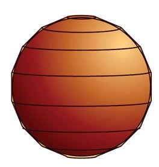<figcaption>Figure fig_ch10_p056_02 (Page 56)</figcaption></figure>
  <figure class="diagram-card" id="fig_ch10_p056_03">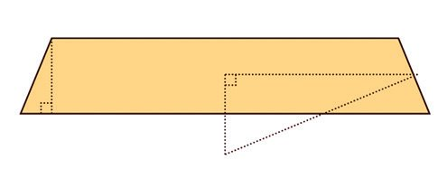<figcaption>Figure fig_ch10_p056_03 (Page 56)</figcaption></figure>
  <figure class="diagram-card" id="fig_ch10_p056_04">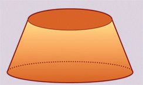<figcaption>Figure fig_ch10_p056_04 (Page 56)</figcaption></figure>
  <figure class="diagram-card" id="fig_ch10_p056_05">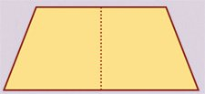<figcaption>Figure fig_ch10_p056_05 (Page 56)</figcaption></figure>
  <div class="page-content">
    <p>ഗണിതം ത</p>
    <p>ബഹുഭുജ-ത്തിന്റെ വശങ്ങളുടെ എണ്ണം കൂടുന്നത-നുസരിച്ച്, പുറത്തെ രൂപം, ഗോളത്തോട് കൂടുതൽ അടുക്കും:
വൃത്തസ്തൂപികാ പീഠം</p>
    <p>ഒരു വൃത്തസ്തൂപിക-യുടെ മുകളിൽനിന്ന് ഒരു
കൊച്ചു വൃത്തസ് ത ഊ- പ ഇക വെട്ടി- എയ- ട ഉ- ത്ത ആൽ
താഴെ മിച്ചം വരുന്ന ഭാഗത്തിന് വൃത്തസ്തൂപികാ
പീഠം (ളൃൗൗേൊ ഈള മ രീില) എന്നാണ് പേര്.</p>
    <p>ഒരു വൃത്ത- സ ് ത ഊ- പ ഇ- ക ആ- പ ഈ- ഠ - ത്ത ഇ- എന്റ മുകളി- ല ത്തെയും താഴത്തെയും വൃത്തങ്ങളുടെ ആരവും,
ചരിവുയരവും അറിയാമെങ്കിൽ പാർശ്വത-ലപ-രപ്പളവ് കണ്ടുപിടിക്കുന്നതെങ്ങനെ?
ഋ</p>
    <p>ഈ സ്തൂപികാപീഠ-ങ്ങളുടെ പാർശ്വത-ലപ-രപ്പളവ്
കണ്ടുപിടിക്കാൻ, അവയിൽ ഒന്നെടുത്തു നോക്കാം.
ഇതിന്റെ മധ്യത്തുകൂടിയുള്ള വൃത്തത്തിന്റെ ആരം ആ
എന്നും, ഉയരം വ എന്ന്മെടുക്കാം. വൃത്തത്തിന്റെ
ആരം ഋ എന്നും, അതിനെ പൊതിയുന്ന ബഹുഭുജത്തിന്റെ ഒരു വശം മ എന്നുംകൂടി എടുത്താൽ, ചുവടെക്കാണുന്ന ചിത്രം കിട്ടും.
മ</p>
    <p>ഋ</p>
    <p>ഇതിലെ രണ്ട് മട്ടത്രികോണ-ങ്ങൾ സദൃശ-മാക-യാൽ</p>
    <p>റ
ഞ</p>
    <p>വലിയ സ്തൂപിക-യുടെയും, ചെറിയ സ്തൂപിക
യുടെയും ചരിവുയ-രങ്ങൾ ഘ, ഹ എന്നെടുത്താൽ,
ചിത്രത്തിൽ റ = ഘ − ഹ. അപ്പോൾ പീഠത്തിന്റെ
പാർശ്വതലപരപ്പള-വ്,
πഞഘ − πൃഹ = π(ഞഘ − ഋഹ)</p>
    <p>= π(ഞ(ഹ + റ) − ഋഹ)
= π(ഞഹ + ഞറ − ഋഹ)</p>
    <p>ഇതിൽ നേരത്തെ കണ്ടത-നുസ-രിച്ച്, ഞൃ = ഘഹ
ആയതിനാൽ, ഞഹ = ഋഘ എന്ന് കിട്ടും. അപ്പോൾ
പീഠത്തിന്റെ പാർശ്വത-ലപ-രപ്പള-വ്.
π(ൃഘ + ഞറ − ഋഹ) = π(ൃ(ഘ − ഹ) + ഞറ)
= π(ൃറ + ഞറ)
= π(ൃ + ഞ)റ</p>
    <p>ആ</p>
    <p>വ</p>
    <p>ആ വ
=
ഋ മ</p>
    <p>എന്ന് കാണാം. അതായത്
മാ = ഋവ
ഇതു കറങ്ങിയുണ്ടാകുന്ന പീഠത്തിന്റെ പാർശ്വത-ലപര-പ്പളവ് 2πാമ ആണെന്ന് പീഠവും സ്തംഭവും
എന്ന ഭാഗത്തു കാണാം (അവസാനത്തെ പുറം).
മുകളിലെ സമവാക്യപ്രകാരം, ഇത് 2πൃവ നു തുല്യമാണ്. അതായ-ത്, പാദത്തിന്റെ ആരം ഋ ഉം, ഉയരം
വ ഉം ആയ വൃത്തസ്തംഭ-ത്തിന്റെ പാർശ്വത-ലപ-രപ്പളവ്.
അപ്പോൾ എന്തുകിട്ടി? മുകളിൽ കണ്ട ഗോളത്തിന്റെ
ഏകദേശ-രൂപ-ത്തിലെ ഓരോ സ്തൂപികാപീഠ-ത്തിന്റെയും പാർശ്വത-ലപ-രപ്പള-വ്, അതേ ഉയര-വും,
ഗോളത്തിന്റെ ആരവുമായ വൃത്തസ്തംഭ-ത്തിന്റെ
പാർശ്വതലപരപ്പള-വാണ്.
208</p>
  </div>
</section><section class="page-section" id="page-57">
  <div class="page-header"><span class="page-number">Page 57</span></div>
  <figure class="diagram-card" id="fig_ch10_p057_01"><figcaption>Figure fig_ch10_p057_01 (Page 57)</figcaption></figure>
  <figure class="diagram-card" id="fig_ch10_p057_02">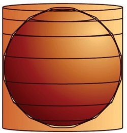<figcaption>Figure fig_ch10_p057_02 (Page 57)</figcaption></figure>
  <figure class="diagram-card" id="fig_ch10_p057_03">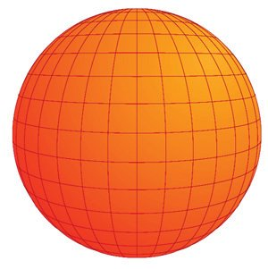<figcaption>Figure fig_ch10_p057_03 (Page 57)</figcaption></figure>
  <figure class="diagram-card" id="fig_ch10_p057_04">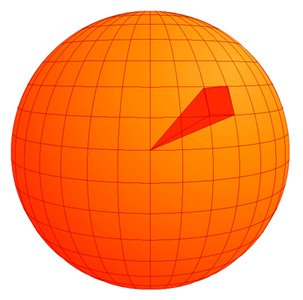<figcaption>Figure fig_ch10_p057_04 (Page 57)</figcaption></figure>
  <figure class="diagram-card" id="fig_ch10_p057_05"><figcaption>Figure fig_ch10_p057_05 (Page 57)</figcaption></figure>
  <div class="page-content">
    <p>ഘനരൂപങ്ങൾ</p>
    <p>അതിനാൽ, ഈ ഏകദേശ-രൂപ-ത്തിന്റെ ആകെ പാർശ്വത-ലപ-രപ്പള-വ്, ഈ വൃത്തസ്തംഭ-ങ്ങളുടെ ആകെ പാർശ്വതലപരപ്പളവാണ്. ഈ വൃത്തസ്തംഭ-ങ്ങൾ കൂട്ടിവ-ച്ചാൽ കിട്ടുന്നതോ? വലിയൊരു വൃത്തസ്തംഭം:
വൃത്തത്തെ പൊതിയുന്ന ബഹുഭുജ-ത്തിന്റെ വശങ്ങളുടെ എണ്ണം കൂടുന്നതനുസ-രിച്ച് അത് കൂടുതൽ വൃത്തസ-മാന-മാകും; ഗോളത്തെ പൊതിയുന്ന രൂപം,
ഗോളസ-മാന-മാകും. ഇപ്പോൾ കണ്ടത-നുസ-രിച്ച്, വശങ്ങൾ എത്ര കൂടിയാലും, ഈ രൂപത്തിന്റെ പാർശ്വത-ലപ-രപ്പള-വ്, ഗോളത്തെ പൊതിയുന്ന വൃത്തസ്തംഭ-ത്തിന്റെ പാർശ്വത-ലപ-രപ്പള-വാണ്. അപ്പോൾ ഗോളത്തിന്റെ ഉപരിതലപ-രപ്പള-വും, അതിനെ പൊതിയുന്ന വൃത്തസ്തംഭ-ത്തിന്റെ പാർശ്വത-ലപ-രപ്പളവ് തന്നെ. വൃത്തസ്തംഭ-ത്തിന്റെ പാദത്തിന്റെ ആരം ഋ ഉം, ഉയരം 2ൃ ഉം
ആയതിനാൽ അതിന്റെ പാർശ്വത-ലപ-രപ്പളവ്
2π ണ്മ ഋ ണ്മ 2ൃ = 4πൃ2</p>
    <p>ഇതുത-ന്നെയാണ് ഗോളത്തിന്റെ ഉപരിത-ലപ-രപ്പളവും.
ഗോളത്തിന്റെ വ്യാപ്തം</p>
    <p>ഈ ചിത്രങ്ങൾ നോക്കുക:
നെടുകെയും കുറുകെയുമുള്ള വൃത്തങ്ങൾ
കൊണ്ട് ഗോളത്തിനെ കളങ്ങളായി തിരിച്ചിരിക്കുന്നു. ഇത്തര-മൊരു കളത്തിന്റെ മൂലകളെ
ഗോളകേന്ദ്രവുമായി യോജിപ്പിച്ചാൽ, സമചതുര-സ്തൂപിക പോലുള്ള ഒരു രൂപം കിട്ടും:</p>
    <p>ഇത്തരം രൂപങ്ങൾ ചേർന്നതാണ് ഗോളം; അതിനാൽ ഗോളത്തിന്റെ വ്യാപ്തം
ഈ രൂപങ്ങളുടെ വ്യാപ്തത്തിന്റെ തുകയാണ്. ഇനി ഗോളത്തിലെ കളങ്ങളോരോന്നിനേയും, ഗോളത്തെ തൊടുന്ന ചെറു സമച-തുര-ങ്ങളാക്കിമാറ്റിയാൽ, ഗോളത്തെ പൊതിയുന്ന ഒരു രൂപം കിട്ടും; അത് ശരിയായ സമച-തുരസ്തൂപിക-കൾ യോജിപ്പിച്ചതാണ്. ഈ സ്തൂപിക-കളുടെയെല്ലാം ഉയരം, ഗോളത്തിന്റെ ആരം തന്നെയാണ്. ഇത് ഋ എന്നും, ഒരു സ്തൂപിക-യുടെ പാദപ-രപ്പളവ് മ എന്ന്മെടുത്താൽ, അതിന്റെ വ്യാപ്തം മൃ എന്ന് കിട്ടും. ഗോളത്തെ
പൊതിഞ്ഞുനിൽക്കുന്ന രൂപത്തിന്റെ വ്യാപ്തം. ഈ സ്തൂപിക-കളുടെ വ്യാപ്ത1
3</p>
    <p>209</p>
  </div>
</section><section class="page-section" id="page-58">
  <div class="page-header"><span class="page-number">Page 58</span></div>
  <figure class="diagram-card" id="fig_ch10_p058_01"><figcaption>Figure fig_ch10_p058_01 (Page 58)</figcaption></figure>
  <figure class="diagram-card" id="fig_ch10_p058_02">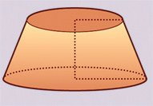<figcaption>Figure fig_ch10_p058_02 (Page 58)</figcaption></figure>
  <figure class="diagram-card" id="fig_ch10_p058_03"><figcaption>Figure fig_ch10_p058_03 (Page 58)</figcaption></figure>
  <figure class="diagram-card" id="fig_ch10_p058_04"><figcaption>Figure fig_ch10_p058_04 (Page 58)</figcaption></figure>
  <figure class="diagram-card" id="fig_ch10_p058_05"><figcaption>Figure fig_ch10_p058_05 (Page 58)</figcaption></figure>
  <div class="page-content">
    <p>ഗണിതം ത
പീഠവും സ്തംഭവും</p>
    <p>ചിത്ര- ത്ത ഇലെ വൃത്ത- സ ് ത ഊ- പ ഇ- ക ആ- പ ഈ- ഠ - ത്ത ഇന്റെ
പാർശ്വത-ലപ-രപ്പളവ് π(ൃ + ഞ)റ എന്ന് കണ്ടല്ലോ.</p>
    <p>ത്തിന്റെ തുകയാണ-ല്ലോ. സ്തൂപിക-കളുടെയെല്ലാം
പാദങ്ങൾ ചേർന്നാൽ, ഈ രൂപത്തിന്റെ ഉപരിത-ലവുമാകും. അപ്പോൾ ഈ സ്തൂപിക-കളുടെയെല്ലാം
പാദപ്പര-പ്പള-വുക-ളുടെ തുക, ഈ രൂപത്തിന്റെ ഉപരിതല പരപ്പള-വാണ്. അത് ഐന്നെടുത്താൽ, രൂപത്തിന്റെ വ്യാപ്തം</p>
    <p>ഇതിന്റെ മധ്യത്തുള്ള വൃത്തത്തിന്റെ ആരം ഃ
എന്നെടുത്താൽ ഇങ്ങനെയൊരു ചിത്രം കിട്ടും:
ഋ</p>
    <p>ഗോളത്തിലെ കളങ്ങൾ ചെറുതാകുകയും അവയുടെ
എണ്ണം കൂടു- ക യും ചെയ്യു- ഏന്താറും ഗോളത്തെ
പൊതിയുന്ന രൂപം കൂടുതൽ ഗോളത്തോട-ടുക്കും;</p>
    <p>ഃ</p>
    <p>റ</p>
    <p>ഞ</p>
    <p>ഇങ്ങനെ ഒരു വരകൂടി വരച്ചാലോ?</p>
    <p>ഐന്നത്, ഗോളത്തിന്റെ ഉപരിത-ലപ-രപ്പള-വിനോടും.
4πൃ 2 ആണെന്ന് കണ്ടല്ലോ. അപ്പോൾ
അത്
ഗോളത്തെ പൊതിയുന്ന രൂപത്തിന്റെ വ്യാപ്തം</p>
    <p>1
4 3
2
ണ്മ
4πൃ
ണ്മ
ഋ
=
πൃ
3
3</p>
    <p>ഋ
ഃ</p>
    <p>എന്ന സംഖ്യയോട് അടുത്തടുത്തു വരുന്നു. ഇതുതന്നെയാണ് ഗോളത്തിന്റെ വ്യാപ്തം.</p>
    <p>ഞ</p>
    <p>വലതുവ-ശത്തെ രണ്ട് സദൃശ-മട്ടത്രികോണ-ങ്ങളിൽനിന്ന്,
ഃ−ൃ 1
=
ഞ−ൃ 2</p>
    <p>എന്ന് കാണാം. ഇതു ലഘൂക-രിച്ചാൽ
ഃ=</p>
    <p>1
ഋെ എന്ന്കിട്ടും.
3</p>
    <p>1
(ഞ + ഋ)
2</p>
    <p>എന്ന് കിട്ടും. അതായ-ത്, പീഠത്തിന്റെ പാർശ്വതലപ-രപ്പള-വ്, 2πഃറ
ഇത്, പാദത്തിന്റെ ആരം ഃ ഉം, ഉയരം റ യും ആയ
വൃത്തസ്തംഭ-ത്തിന്റെ പാർശ്വത-ലപ-രപ്പള-വല്ലേ?
ഃ
റ</p>
    <p>210</p>
  </div>
</section>
    </main>

    <footer>
      <div class="nav-bar"><a href="chapter_09_solids.html">← അധ്യായം 9: ഘനരൂപങ്ങൾ</a><a href="index.html">☰ Index</a><a href="chapter_11_polynomials.html">അധ്യായം 11: ബഹുപദങ്ങൾ →</a></div>
      <p style="text-align: center; font-size: 0.85rem; color: var(--text-muted); margin-top: 2rem;">
        Kerala SCERT Class 10 ഗണിതം (Malayalam Medium) - Extracted Study Text
      </p>
    </footer>
  </div>
</body>
</html>
